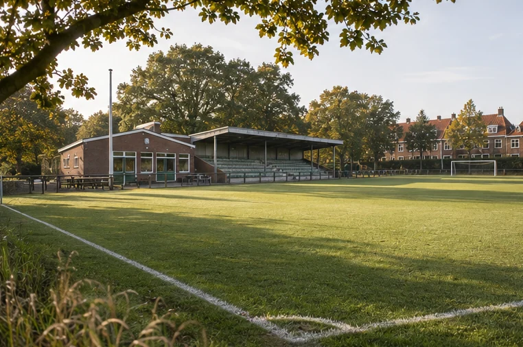

Uitgelicht
Nieuws uit Haaglanden
Zaterdag 5 juni
Op het programma
Sportpark HoutrustNaar de finaledag↗
Seizoen 2026/27
Ontdek het toernooi
Het laatste nieuws
Naar het nieuwsoverzichtDe knock-outfase
Seizoen 2026/27
Volg jouw club van de eerste aftrap tot de finaledag op Houtrust. Bekijk het programma, de live tussenstanden en de route naar de beker.
Uitgelicht
Zaterdag 5 juni
Seizoen 2026/27
De knock-outfase
Alle bekers · Seizoen 2026/27
Bekijk alle wedstrijden per dag, week of maand. Plan jouw volgende bekeravond.
De hele bekerkalender
Knock-outfase
Volg ieder duel op weg naar de finale op Houtrust.
Knock-out · Seizoen 2026/27
Elk duel telt. Volg iedere ronde, van de eerste loting tot bekerwinst.
Bekijk alle rondes. Op je telefoon staat één ronde tegelijk in beeld.
Wedstrijddag · 5 juni 2027
Alle actuele duels bij elkaar. Volg de standen en bekijk wat er op de velden gebeurt.
0 wedstrijden
Op deze dag zijn er momenteel geen wedstrijden bezig.
Dicht op de wedstrijd
Selecteer een duel voor de score, het veld en de wedstrijdgegevens.
Kwartfinale · Sir Winston Cup
Volg de stand, het wedstrijdverloop en de aftrapgegevens.
Het wedstrijdcentrum
Van de eerste aftrap tot het bevestigde wedstrijdbeeld.
Wat er op het veld gebeurt
Meldingen van teamleiding zijn voorlopig. De scheidsrechter bevestigt het definitieve wedstrijdbeeld.
Aan de aftrap
Beeld langs de lijn
Finaledag · 12 juni 2027
De finales, de sfeer en alles voor jouw dag op Houtrust. Eén regio, samen om de beker.
Van eerste ontvangst tot laatste fluitsignaal
De ontknoping van het Haaglanden Voetbaltoernooi. Kom voor je eigen club, blijf voor het bekervoetbal en beleef de finaledag langs de lijn.
Voorbeeldtijden voor dit prototype. Het wedstrijdprogramma is leidend voor aftrap, veld en eventuele wijzigingen.
Goed voorbereid naar de finale
Een veld vol bekervoetbal en je club dichtbij. Met deze drie stappen vind je snel je weg op de finaledag.
Vind jouw wedstrijdDe ontknoping per beker
De finalisten worden bekend zodra de halve finales zijn afgerond. Hier komen de laatste duels van iedere beker samen.
Fictieve wedstrijdgegevens. Definitieve aanvangstijden en veldindeling volgen via de wedstrijdkalender.
Je route naar de bekerdag
Alles voor een fijne dag
Entree-informatie volgt. Eventuele toegangsvoorwaarden worden vooraf op deze pagina bekendgemaakt.
Informatie over de kantine en de voorzieningen op het sportpark volgt richting de finaledag.
Heb je ondersteuning nodig bij je bezoek? Stem je wensen vooraf af met de organisatie en meld je bij de ontvangst.
Moedig je team aan, geef spelers en officials de ruimte en volg de aanwijzingen van de vrijwilligers.
Ga naar de ontvangst op het sportpark. De organisatie helpt je verder bij vragen, gevonden voorwerpen of een incident.
Vind jouw plek langs de lijn
Kies een veld of voorziening. De wedstrijden komen rechtstreeks uit de actuele finaledagplanning.
Schematische voorbeeldplattegrond van het sportpark; definitieve looproutes worden door de organisatie vastgesteld.
Snel een antwoord
Open de wedstrijdkalender en selecteer je duel. De wedstrijdgegevens vermelden het veld, de locatie en de geplande aftrap. Controleer dit ook op de dag zelf.
De teammanager ontvangt de meldinstructies via de organisatie. Houd ruimte voor de ontvangst, het omkleden en de spelerscontrole. De specifieke meldtijd is leidend.
De teammanager kiest spelers uit de goedgekeurde toernooilijst. De scheidsrechter controleert de spelersopgave voor de aftrap. Een aanvullende speler heeft vooraf toestemming van de toernooileiding nodig.
De laatste aftraptijd, het veld en de wedstrijdstatus staan in de wedstrijdkalender. Controleer het programma voordat je naar het sportpark vertrekt.
Via Live volg je de wedstrijden die bezig zijn. Na afloop vind je de uitslagen en het verloop terug bij de wedstrijd. Livestreaminformatie volgt als die beschikbaar komt.
De prijsuitreiking sluit aan op de betreffende finale. Teams blijven na het laatste fluitsignaal beschikbaar en volgen de instructies van de toernooileiding.
Sportpark Houtrust
Volg de velden en werk de live tussenstand bij.
Seizoen 2026/27
Kies een beker of leeftijdscategorie en ontdek de route naar Houtrust.
Standaardteams · Knock-out
De bekerstrijd voor de standaardteams. Volg alle duels en ontdek welke clubs zich plaatsen voor de finaledag op Houtrust.
Standaardteams · Knock-out
Een eigen bekerroute voor de standaardteams. Van de eerste aftrap tot de finale draait elk duel om een plek in de volgende ronde.
Vrouwen · Knock-out
De vrouwen strijden in rechtstreekse duels om de beker. Volg de teams van de eerste ronde tot de finale op Houtrust.
Onder 23 · Knock-out
De beloften van de regio spelen om hun eigen beker. Volg de knock-outduels op weg naar de finaledag op Houtrust.
Jeugd · Knock-out
De jeugdteams spelen per leeftijdscategorie om de beker. Ontdek het programma en volg hun route naar de finaledag.
Rond de beker
Haaglanden
Bekijk waar je club speelt en welke velden je op de wedstrijddag nodig hebt.

Den Haag · Finaledag
Hoofdveld, veld 2 en veld 3, dat op de finaledag in 3A en 3B kan worden verdeeld.
Finaledaginformatie ↗Mijn account · Prototype
Volg jouw teams en open de werkruimte die bij jouw rol past.
Accountvoorbeeld · Demotoegang
Bewaar je teams en open de werkruimte die bij jouw rol past.
Dicht bij jouw club
Typ de naam en kies een team om het te volgen.
Volg ook verenigingen, bekers en losse wedstrijden
Je teamkeuze blijft op dit apparaat bewaard.
Voor iedereen rond het veld
Van toernooileiding tot supporter: verken de omgeving die bij jouw rol past.
Haaglanden Voetbal
Vind officiële uitslagen, wedstrijdgegevens en beeldmateriaal voor publicatie.
Perscentrum · Fictieve gegevens
Uitslagen, vrijgegeven opstellingen en goedgekeurd beeldmateriaal voor jouw verslag.
Alleen na vrijgave
Met toestemming voor artikelen
Beeld en rechten bij elkaar
Het pakket volgt de hierboven gekozen wedstrijd. Alleen goedgekeurde beelden met artikelrechten en de verplichte credits worden meegenomen.
Toernooileiding
Bekijk de openstaande acties per club, team en wedstrijd.
Eén gedeelde toernooibasis
Acties volgen uit de actuele spelerslijsten, wedstrijden en dossiers.
Het oog opent de actie. Via het persoonicoon wijs je een behandelaar en deadline toe.
Toernooileiding
Beheer bekers, inschrijvingen, lotingen en reglementen.
Toernooileiding · Seizoen 2026/27
Eén deelnemerslijst, één bekerindeling en één kalender.
Deelnemende teams
Beoordeel de inschrijving met een vastgelegde reden. Goedgekeurde teams zijn beschikbaar voor de bekerindeling.
De route naar de beker
De wedstrijden hieronder zijn dezelfde wedstrijden als in het bekerschema en de kalender.
Een nieuwe bracket begint met de goedgekeurde teams in de getoonde volgorde. Overige plekken worden vrijlotingen. Je controleert de indeling daarna in Toernooibeheer. Begonnen wedstrijden blijven behouden.
Bestaande en nieuwe wedstrijden
Upload een CSV uit Excel of plak de inhoud. Controleer iedere regel voordat je de geldige wedstrijden toevoegt aan de centrale kalender.
Verplicht: date, time, homeTeamId, awayTeamId. Teams mogen ook met hun exacte naam worden ingevuld. De beker hierboven geldt als tournamentId ontbreekt. Scheidingsteken: puntkomma of komma.
tournamentId, roundKey, date, time, homeTeamId, awayTeamId, field, status, duration, homeScore, awayScore, penHome, penAway, extraTimePlayed, minute, reason.
Status: scheduled, live, finished, cancelled, suspended of review. Historische uitslagen gebruiken finished. Het thuispark wordt afgeleid van de thuisvereniging; op 12 juni is Houtrust de centrale locatie.
Na controle zie je per regel welke gegevens klaarstaan en welke aandacht nodig hebben.
Alleen goedgekeurde regels worden toegevoegd. Reeds bestaande wedstrijden worden niet stilzwijgend overschreven. Eventuele wijzigingen tijdens de import verschijnen per regel in het resultaat.
Een nieuwe bekereditie
Voeg een bekertoernooi, vereniging of team toe met een overzichtelijke wizard.
Naam, reglement en deelnemers. In vier overzichtelijke stappen naar een complete toernooiopzet.
Clubgegevens, thuislocatie en contactpersoon samen op één plek. Voeg daarna direct de teams toe.
Maak een team aan of verbind een bestaande selectie met één of meerdere passende bekers.
De juiste verbinding
Een eigen dossier voor ieder seizoen
Personen en HV-ID’s blijven behouden. Wedstrijden, inschrijvingen en goedkeuringen horen bij hun eigen editie.
Eén persoon, een blijvend HV-ID
Een teamovergang wijzigt de eerdere wedstrijdformulieren niet. Mogelijke dubbele identiteiten worden met een besluit gekoppeld.
Toernooileiding · Toernooibeheer
Stel de reglementen vast, bepaal de rondevoortgang en deel het bekerschema in.
Toernooileiding · Seizoen 2026/27
Leg het reglement vast en bepaal hoe iedere ronde verdergaat.
Van aftrap tot beslissing
De instellingen en teksten horen bij het geselecteerde toernooi.
Regie over de volgende ronde
Kies per ronde of winnaars automatisch doorgaan of eerst op een besluit wachten.
Een bevestigde winnaar verschijnt direct op de gekoppelde plek in de volgende ronde.
Winnaars wachten op vrijgave. De toernooileiding kan eerst een nieuwe indeling publiceren.
Zet de bronronde op handmatig. Verdeel daarna de gekwalificeerde teams onder Bracketindeling en publiceer de gekozen volgorde.
Iedere plek bewust gekozen
Plaats teams op de juiste plek, wissel de volgorde en voeg vrijlotingen toe.
Gespeelde en begonnen wedstrijden behouden hun deelnemers.
Controleer het concept voordat je de indeling publiceert.
Besluiten terugvinden
Verenigingsleiding · Wedstrijdtenues
Leg de kleuren van shirt, broek en sokken vast. Zo komen beide teams goed voorbereid aan de aftrap.
Voorbereid op pad
Toernooi- en wedstrijdreglementen
Bekijk per beker de speelduur, beslisregels en afspraken voor deelname.
Duidelijk voor iedere aftrap
De afspraken voor deelname en voor de wedstrijd, bij elkaar voor jouw toernooi.
Deelname en organisatie
Van aftrap tot eindstand
Voorbeeldreglementen in dit prototype. Bij een gestarte wedstrijd blijven de vastgelegde wedstrijdafspraken aan dat duel gekoppeld.
Wedstrijdzaken
Stem wedstrijden af en beheer je teams, velden en kleedkamers.
Voorbereid op de aftrap
Van de vereniging
Wedstrijdzaken
Bereid je wedstrijd voor en dien de spelerslijst in.
Teamleiding · Spelers en wedstrijdzaken
Beheer de toernooilijst en dien per wedstrijd een opgave met uitsluitend goedgekeurde spelers in.
Goedgekeurd vóór de aftrap
Iedere wijziging blijft traceerbaar
Na indienen via de leiding
Rond het team
Wedstrijdzaken
Bevestig je aanstelling, controleer spelers en rond het duel af.
Scheidsrechteromgeving · Demoprogramma
Kies een wedstrijd en open daarna de controle, registratie of afronding.
De afspraak voor jouw wedstrijd
Na bevestiging kun je de spelerspassen van de twee ingediende opgaven controleren.
Iedere opgave, dezelfde zorgvuldige controle
Controleer naam, geboortedatum en foto. De vastgelegde versie blijft gekoppeld aan dit duel.
Teamregistraties, door jou bevestigd
Controleer de gebeurtenissen van beide teammanagers en voeg je eigen registraties toe.
Elke helft een zorgvuldig verloop
De scheidsrechter bepaalt de fases. Pauzeren verandert de stand niet.
Beslissing vanaf de stip
De serie wordt apart geregistreerd en telt niet mee als gewone doelpunten.
Het definitieve wedstrijdbeeld
Jij stelt het wedstrijdbeeld vast. Teams kunnen daarna een onderbouwd bezwaar indienen.
12 juni 2027 · Sportpark Houtrust
Beheer de planning, ontvangst en prijsuitreiking.
12 juni 2027 · Duindorp SV en SVV Scheveningen
Deze regie gebruikt dezelfde wedstrijden, tijden en velden als de openbare kalender en het bekerschema.
Centrale wedstrijdkalender
Een reservering loopt van 45 minuten voor de aftrap tot 20 minuten na de gereserveerde speeltijd.
| Finale | Team | Kamer | Reservering |
|---|
Voorstel vóór publicatie
Bekijk de gevolgen voor volgende finales, kamers, officials, vrijwilligers en prijsuitreiking.
Wedstrijdzaken
Wijs een scheidsrechter aan en controleer beschikbaarheid en bevestiging.
Per datum geregeld
Aanpassingen die een bevestigde aanstelling raken komen bij de organisatie terug.
Eigen HV-officials
Bevoegdheden en clubverbondenheid horen bij de official. Neutrale aanstellingen worden daarop gecontroleerd.
HV Control
Volg wijzigingen in het programma, de aanstellingen en de uitslagen.
De inbox demonstreert lokale bezorging en ontvangst per account. Er worden geen externe berichten verstuurd.
12 juni 2027 · Finaledag
Bekijk je dienst, vink taken af en volg wijzigingen op de finaledag.
Gastverenigingen · Gezamenlijke checklist
Coördinatie · Eigen HV-organisatie
Aanwezigheid, wachtlijst en vervanging worden per dienst vastgelegd.
Diensten beheren
Vrijwilligers beheren
Verantwoordelijkheid en deadline
Toernooileiding
Beoordeel spelersverzoeken en leg de regels voor leeftijd en dispensatie vast.
Toernooileiding · Spelersbeheer
Beoordeel de volledige eerste spelerslijst, individuele correcties en toevoegingsverzoeken. Leeftijdsregels horen bij de reglementsversie van de beker.
Toevoegingen en correcties na het indienen van de lijst.
Een uitzondering met duidelijke grenzen
Een individuele dispensatie geeft toestemming voor een leeftijdsafwijking. Het maximum per wedstrijdselectie blijft altijd gelden.
Nieuws uit Haaglanden
De verhalen, clubs en mensen achter het toernooi.
Er zijn geen berichten die bij je zoekopdracht passen.
Haaglanden Voetbal
Nieuws en achtergronden van het Haaglanden Voetbaltoernooi.
Bekijk de nieuwste verhalen in het nieuwsoverzicht.
Naar het nieuwsHaaglanden Voetbal
Ontdek de club, de teams en het laatste nieuws.
Vereniging in Haaglanden
Volg het nieuws van de vereniging en ontdek de teams die aan de Haaglanden Voetbaltoernooien deelnemen.
Vorm op basis van bevestigde uitslagen. Nieuwste wedstrijd links.
Uit de selectie
Deelnemende teams
Van de club
Haaglanden Voetbal
Volg jouw elftal en de verhalen rond het toernooi.
Het nieuws rond jouw team, van de voorbereiding tot de volgende bekerronde.
Vorm op basis van bevestigde uitslagen. Nieuwste wedstrijd links.
Uit de selectie
Rond het team
Redactie
Schrijf verhalen en verbind ze aan de juiste toernooien, verenigingen en teams.
Maakt een controleerbaar concept uit officiële uitslagen en bevestigde gebeurtenissen. Publiceren blijft een redactioneel besluit.
Nieuw artikel
Besloten redactievoorbeeld
Toernooileiding · Seizoen 2026/27
Verdeel de wedstrijden over de kalender en voeg gespeelde of nieuwe duels toe.
Toernooileiding · Seizoen 2026/27
Plan wedstrijden, verplaats duels en voeg ook eerdere speelrondes toe.
Sleep een gepland duel naar een dag of tijdvak. Op je telefoon open je een duel en kies je Verplaatsen.
Voorbereiden met de bekende gegevens
Rust, reistijd en veldsluiting worden gecontroleerd voordat een verplaatsingsvoorstel wordt gepubliceerd.
Teamleiding · Live wedstrijdbeeld
Houd doelpunten, kaarten en wissels bij. De scheidsrechter bevestigt het definitieve wedstrijdbeeld.
Teamleiding · live wedstrijdinvoer
Deel gebeurtenissen van je eigen team. De scheidsrechter controleert en bevestigt het uiteindelijke wedstrijdbeeld.
Voorbeeldomgeving voor de teammanager van het geselecteerde team.
Jouw registratie
Beide teams
Voorlopige invoer blijft herkenbaar tot de scheidsrechter deze heeft bevestigd. Afgewezen registraties blijven zichtbaar voor de teams.
Seizoen 2026/27 · Demostatistieken
Van het eerste doelpunt tot de laatste finale. Ontdek de cijfers van clubs, teams en spelers.
Demostatistieken · Editie 2026/27
Van de eerste ronde tot de finaledag. Ontdek wie het verschil maakt en volg de cijfers van jouw club.
Iedere telling heeft een betekenis
De laatste acht speeldagen
Alleen de bevestigde eindstanden tellen mee. Strafschoppenseries worden niet als wedstrijddoelpunten geteld.
Op dit moment
Live cijfers zijn voorlopig. De scheidsrechter bevestigt het uiteindelijke wedstrijdbeeld.
Volg de wedstrijdenUitblinkers van deze editie
Transparante cijfers
| Wedstrijd | Registratie | Doelpunten gekoppeld |
|---|
Alleen na expliciete bevestiging van het volledige wedstrijdbeeld noemen we een registratie volledig. Onbekende doelpuntenmakers worden niet aangevuld.
Eerdere ontmoetingen
Prototype met fictieve wedstrijden en spelers. Cijfers worden berekend uit het programma, de vastgelegde eindstanden en de bevestigde spelgebeurtenissen. Historische uitslagen kunnen doelpunten zonder geregistreerde doelpuntenmaker bevatten.
Haaglanden Voetbal · Spelersprofiel
Vorm, doelpunten en prestaties in het bekertoernooi, op één plek.
Spelersprofiel · Demostatistieken
De vorm van het team in gespeelde wedstrijden van deze speler.
In het veld
Het verhaal achter de cijfers
Van de eerste speelminuut tot het laatste fluitsignaal. Goals, kaarten en wissels worden gekoppeld aan de bevestigde wedstrijdregistraties.
Live registraties zijn voorlopig en tellen pas na bevestiging mee in de vaste statistieken.
Volg de wedstrijdenSpelersportaal · Demo
Jouw team, de volgende aftrap en de praktische afspraken op één plek.
Spelersomgeving · Demoprofiel
Duindorp SV 1
Spelerslijst ingediendGoed voorbereid naar het veld
Afstemmen met je team
Geef voor ieder duel afzonderlijk je beschikbaarheid door. Je teammanager ziet jouw antwoord bij de voorbereiding.
Jouw bekerroute
Persoonlijk
Supporters · Langs de lijn
Volg je teams, mis geen aftrap en blijf bij met het nieuws uit Haaglanden.
Jouw club. Jouw bekeravond.
Bewaar je teams, ontdek de volgende wedstrijd en volg het verhaal langs de lijn.
Volg wat voor jou telt
Van eerste aftrap tot finale
Verhalen rond jouw club
Toernooileiding · Wedstrijddossiers
Behandel bezwaren, incidenten en tuchtzaken met een navolgbaar besluit.
Wedstrijdzaken · Besluiten en opvolging
De scheidsrechter stelt het wedstrijdbeeld vast. Teams kunnen bezwaar indienen; de toernooileiding behandelt uitzonderingen met een gemotiveerd besluit.
Alle gegevens in deze omgeving zijn fictief. Interne rapporten worden niet in het publieke wedstrijdverloop getoond.
Vanuit de teamleiding
Een bezwaar opent een dossier. De door de scheidsrechter vastgestelde stand wijzigt daardoor niet automatisch.
Scheidsrechter · Wedstrijdleiding
Bewaar de tussenstand, spelers op het veld, kaarten en wissels. Een vervolg begint bij deze momentopname.
Speelgerechtigdheid over wedstrijden heen
Bevestigde rode kaarten en de ingestelde gelekaartengrens openen een dossier. De voorlopige blokkade blijft gelden totdat er een besluit is.
Deelnamecontrole
Uitzonderingen met een vastgelegde reden
Gebruik dit bij niet opkomen, een reglementsovertreding of een gemotiveerde uitslagcorrectie. Een vrijloting beheer je in het bekerschema.
Alleen de toernooileiding legt dit besluit vast. Kies de bijbehorende demowerkruimte om de behandeling te bekijken.
Afspraken vooraf
Elke beker heeft eigen termijnen. De procedure wordt bij een nieuw bezwaarschrift vastgelegd, zodat de geldende afspraken terug te vinden blijven.
Een gemotiveerde uitzondering
Leg een uitzondering voor één team en één wedstrijd vast, inclusief reden en nieuwe eindtijd.
Toernooileiding · Besluiten en afsluiting
Bekijk de historie, controleer openstaande zaken en sluit een editie zorgvuldig af.
Toernooileiding · Controle en verantwoording
Controleer de voortgang, sluit een toernooi af en bekijk wie welke wijziging heeft vastgelegd.
Van wijziging tot besluit
Een complete editie
Editie 2026/27
Sluit eerst iedere beker af. Een vergrendeld seizoen blokkeert nieuwe sportieve wijzigingen; een gemotiveerde heropening blijft mogelijk.
Fotografen · Communitymedia
Deel jouw beelden met een credit en duidelijke afspraken over gebruik.
Fotograaf en community · Demo
Verbind foto's en video's aan de wedstrijd. Jij kiest waarvoor Haaglanden Voetbal het materiaal mag gebruiken.
Langs de lijn gemaakt
Van inzending naar publicatie
Haaglanden Voetbal · Beeldbank
Goedgekeurde beelden en verhalen van langs de lijn.
Deze beeldbank gebruikt fictieve demo-inzendingen en gegenereerde sfeerbeelden. De afzonderlijke rechten bepalen waar een inzending zichtbaar wordt.
Toernooileiding · Publicatiebeleid
Bepaal welke spelersgegevens en beelden voor publiek en pers worden vrijgegeven.
Toernooileiding · Redactie en toestemming
Beheer toestemming per speler, vrijgave per beker en het gebruik van ingezonden beeldmateriaal.
Per persoon vastgelegd
Vrijgave per beker
De vereniging bepaalt zelf of haar contactpersoon openbaar zichtbaar mag zijn. Zonder vrijgave toont het verenigingsprofiel geen naam, e-mail of telefoon.
Contactzichtbaarheid beheren bij de verenigingRedactionele controle
Accreditatie in de demo
Haaglanden Voetbal · Zoeken
Van vereniging tot wedstrijd. Alles uit het toernooi op één plek.
Alles uit Haaglanden
Zoek verenigingen, teams, bekers, wedstrijden en nieuws op één plek.
Mijn HV Control · Favorieten
Bewaar de teams, clubs, bekers en wedstrijden die jij wilt volgen.
Jouw favorieten
Volg teams, verenigingen, bekers en losse wedstrijden. Je teamkeuzes worden ook bij Mijn teams gebruikt.
Je keuzes worden in deze demo op dit apparaat bewaard. Meldingsvoorkeuren vind je bij Berichten.
Haaglanden Voetbal · Historie
De winnaars, de cijfers en de verhalen van eerdere edities.
De bekers door de jaren heen
Open een volledige editie: het schema, de uitslagen, de geldende reglementen en de verhalen blijven op één plek bewaard.
Alle personen, wedstrijden en edities in dit prototype zijn fictieve voorbeeldgegevens. Een heropening maakt een nieuwe revisie van hetzelfde editiedossier. Het oorspronkelijke besluit blijft bewaard.
Mijn HV Control · Persoonlijk overzicht
De wedstrijden, acties en informatie die bij jouw actieve rol horen.
Jouw HV Control
Jouw wedstrijden, acties en informatie komen hier samen.
Fictieve accounts voor je eindcontrole. Iedere rol heeft een eigen club-, team- of wedstrijdscope.
Jouw eerstvolgende stap
Persoonlijke werkvoorraad
De juiste werkruimte
Eén persoon, meerdere functies
Rollen worden toegekend voor een specifieke vereniging, team of wedstrijd.
Wedstrijdvoorbereiding
Van goedgekeurde spelerslijst tot bevestigde scheidsrechter. Iedere afspraak op één plek.
Van afspraak tot aftrap
De status volgt uit de echte spelerslijsten, aanstellingen en afspraken.
Jouw wedstrijdbriefing
Verzamelen, aftrap, tenue en ontvangst. De juiste informatie voor jouw bekeravond.
Alles voor vertrek
Verzamelen, aftrap, tenue en ontvangst op één plek.
Afspreken met jouw team
Toernooileiding · Datakwaliteit
Controleer ontbrekende gegevens en maak de betrouwbaarheid van registraties inzichtelijk.
Cijfers die je kunt uitleggen
Ontbrekende registraties en mogelijke tegenstrijdigheden blijven zichtbaar, zonder onbekende feiten in te vullen.
Overdracht van de wedstrijddag
Wedstrijden die op of vóór de demodag liggen en nog geen definitieve afhandeling hebben.
HV Control · Werkzekerheid
Bekijk lokale acties, verwerk je wachtrij en houd een noodpakket bij de hand.
Zekerheid langs de lijn
Een lokale actie is pas in het gedeelde demoregister verwerkt nadat de wachtrij is afgehandeld.
Dit is een lokale simulatie. De VPS-versie krijgt echte ontvangstbevestiging en synchronisatie tussen apparaten.
Bereikbaar zonder verbinding
Download het programma en de praktische wedstrijdgegevens die bij jouw rol horen. Privécontrolefoto’s en relatiecodes staan hier niet in.
De toernooileiding kan een volledige demoherstelkopie opslaan. Bewaar deze als besloten bestand.
Controleer alle momenten
Alle tijden worden geïnterpreteerd in Europe/Amsterdam, inclusief zomer- en wintertijd.
Werk een actieve wedstrijd eerst bij voordat je de app vernieuwt.
Functioneel ontwerp · Versie 18
De gewenste werking, uitzonderingen en controlecriteria voor het volledige platform.
Functioneel ontwerp · versie 18
De vastgelegde gewenste werking, keuzes, uitzonderingen en acceptatiecriteria voor de laatste prototypecontrole en de latere VPS-bouw.
Versie: 18 · Bijgewerkt: 23 november 2026 · Project: Haaglanden Voetbal
Dit document beschrijft de afgesproken gewenste werking van HV Control: het openbare platform, de besloten werkruimtes, de sportieve regels, de administratie en de gezamenlijke finaledag. De laatste keuzes van de opdrachtgever zijn leidend. De acceptatiechecklist in HV-Control-Acceptatiechecklist.md beschrijft hoe deze werking wordt gecontroleerd. Dit document is een functionele specificatie; een beschreven productievoorwaarde is geen bewering dat de lokale prototypeversie al een productieserver, echte authenticatie of externe bezorging gebruikt.
Het prototype is bedoeld voor de laatste inhoudelijke en visuele controle vóór de bouw van de VPS-versie. Alle voorbeeldpersonen, wedstrijdregistraties, toestemmingen en besluiten zijn fictief. De bestaande donkergroene, limegroene en lichte Shell blijft het uitgangspunt.
HV Control beheert de eigen Haaglanden-bekertoernooien van inschrijving en loting tot officiële uitslag, statistieken en archief. Dezelfde wedstrijdgegevens voeden programma, live-overzicht, bekerschema, club- en teamprofiel, werkvoorraad en finaledagregie.
| Eis | Vaste afspraak |
|---|---|
| BAS-01 | HV Control is een volledig eigen systeem. Er is geen Sportlink-koppeling, Sportlink-import of afhankelijkheid van een externe voetbaladministratie. |
| BAS-02 | Alle bekertoernooien zijn knock-outtoernooien. Er worden geen poulestanden of poulepunten geïntroduceerd. |
| BAS-03 | De scheidsrechter stelt de definitieve uitslag en het definitieve wedstrijdbeeld vast. Een verplicht akkoord van beide teams is geen voorwaarde voor normale publicatie. |
| BAS-04 | Teammanagers kunnen gebeurtenissen tijdens hun eigen wedstrijd voorlopig melden. De scheidsrechter beoordeelt de registraties en lost verschillen of dubbelen op. |
| BAS-05 | Een teambezwaar opent een dossier. De geldige uitslag blijft staan tot een expliciet, gemotiveerd ander besluit van de bevoegde toernooileiding. |
| BAS-06 | Wedstrijden worden buiten de finaledag bij de thuisclub gespeeld. De finaledag gebruikt de centrale finaledaglocatie van de editie. |
| BAS-07 | Personen, verenigingen, teams, bekers en wedstrijden hebben stabiele HV-ID's. Verplaatsen, van team wisselen en een volgend seizoen maken geen nieuwe persoonsidentiteit. |
| BAS-08 | Technische HV-ID's zijn op besloten werkprocessen gericht. Openbare supportersschermen tonen normale namen en herkenbare wedstrijdinformatie. Een publieke link mag een ID gebruiken zonder dit als prominent label te tonen. |
| BAS-09 | Openbare informatie gebruikt een aparte publicatieprojectie. Geboortedatum, relatiecode, identiteitscontrole en interne rapporten worden niet openbaar. |
| BAS-10 | Eén gedeelde Shell bepaalt breedtes, componenten, tussenruimtes, herohoogtes, navigatie en responsief gedrag. Modules vormen visueel en functioneel één product. |
| BAS-11 | De prototypeversie gebruikt mock-data en lokale opslag. Ontvangst door een demo-service wordt als demonstratie aangeduid; echte mail, push, productieaccounts en databases volgen bij de VPS-bouw. |
| BAS-12 | Historische wedstrijden en het al lopende toernooi kunnen handmatig of gecontroleerd via CSV worden ingevoerd. Herkomst en kwaliteit van historische gegevens blijven herkenbaar. |
Een gebruikershandeling mag niet stil een onafhankelijke kopie van een wedstrijd wijzigen. Er is één centrale identiteit, met afzonderlijke versies voor planning, opgave, reglement, gebeurtenissen en officiële uitslag.
De volgende onderdelen behoren tot de afgesproken uitwerking: persoonlijke rolstartpagina's, wedstrijdvoorbereiding, volledige bezwaarprocedure, arbitrage, wedstrijdklok, finaledagregie, blijvende identiteit en edities, alle statistiekverbeteringen, gerichte meldingen, beschikbaarheid per wedstrijd, briefing, offline wachtrij, datakwaliteit en noodpakket.
De planningsmodule krijgt samenhangende controles en zicht op gevolgen van wijzigingen. Er wordt geen ondoorzichtige automatische planner verondersteld die zonder controle een volledig programma publiceert. De gebruiker kan begrijpen waarom een tijdslot wel of niet past.
| Beleving of koppeling | Afspraak |
|---|---|
| Road to Houtrust | Inbegrepen: persoonlijke bekerroute op basis van echte wedstrijdnodes. |
| Lotingshow | Inbegrepen en instelbaar aan/uit. De presentatie volgt een gecontroleerde trekking en kan geen uitslagen veranderen. |
| Verslag als redactieconcept | Inbegrepen en instelbaar aan/uit. Alleen bevestigde feiten worden in een concept verwerkt; redactionele publicatie blijft een aparte handeling. |
| Digitale bekerkast | Inbegrepen, gekoppeld aan officiële archieven en stabiele entiteiten. |
| Moment van de wedstrijd | Inbegrepen met nominatie, moderatie en begrensd stemmen. |
| Interactieve finaledagkaart | Inbegrepen, met velden, voorzieningen en actueel programma. |
| Kalenderabonnement | Uitgesloten. Geen abonnement-URL, periodieke synchronisatie of inschrijfflow. Een bestaande losse kalenderdownload is geen abonnement. |
| Sportlink | Uitgesloten. Relatiecodes zijn handmatig beheerde gegevens binnen de eigen administratie. |
| Matchday Studio, VeyoCast- of SocialHero-koppeling | Geen onderdeel van deze uitwerking. De losse optionele redactieconceptfunctie werkt binnen HV Control. |
| Externe evenementenkoppeling | Niet nodig voor de werking van het prototype. Finaledag en vrijwilligers moeten met de eigen gegevens werken. |
| Betaalmodel of financiële afrekening | Geen voorwaarde voor sportieve processen of de laatste prototypecontrole. |
ACC-01. Een account vertegenwoordigt een persoon. Die persoon kan meerdere lidmaatschappen en rollen hebben. Een context bestaat uit account, rol, eventuele vereniging, team, beker, editie of toegewezen wedstrijd en de geldigheidsperiode.
ACC-02. De gebruiker wisselt expliciet tussen eigen rollen. Een voorzitter die ook scheidsrechter is, ziet in de scheidsrechtercontext uitsluitend toegewezen wedstrijden en in de verenigingscontext uitsluitend de eigen vereniging. Een rolnaam alleen is onvoldoende om willekeurige teamgegevens te openen.
ACC-03. De toernooileiding kan bevoegdheden uitnodigen, toekennen, intrekken en tijdelijk delegeren. Intrekking werkt door in open formulieren en volgende handelingen. Historie behoudt de oorspronkelijke handelende persoon en context.
ACC-04. In de demo zijn voorbeeldaccounts en rollen beschikbaar om de processen te controleren. Dat is geen echte identiteitsverificatie. Bij productie controleert de server de accountcontext en toegang voor iedere lees- en schrijfactie.
De ingang Mijn overzicht (start) laat de actieve voorbeeldpersoon en het lidmaatschap zien. Voorbeeldrollen kunnen vanuit een werkruimte worden gekozen om een andere gebruikersreis te testen. Deze zichtbare demo-rolwisseling is een demonstratiefunctie; ze is geen inlog- of autorisatiemethode voor de latere openbare productieomgeving. Tijdelijke vervanging en het intrekken van rollen worden binnen het mock-register wel functioneel gecontroleerd.
| Rol | Lezen | Muteren en besluiten | Grenzen |
|---|---|---|---|
| Toernooileiding | Eigen editie, bekers, deelnemende clubs, dossiers en operationele overzichten | Reglementen, inschrijvingen, planning, loting, spelersbeoordeling, aanstellingen, formele uitzonderingen, afsluiting | Handelt binnen toegekende editie/beker; besluiten en heropeningen hebben een reden. |
| Verenigingsleiding | Eigen vereniging, teams, thuisafspraken en aan die vereniging gerichte berichten | Teaminschrijvingen, clubcontacten, tenues, thuisontvangst, wijzigingsvoorstellen | Geen spelers- of contactadministratie van andere verenigingen. |
| Teamleiding | Eigen selectie, wedstrijden, besloten briefing, eigen dossiers | Toernooilijst, wijzigingsverzoeken, wedstrijdopgave, voorlopige gebeurtenissen, bezwaar en reacties | Selecteert uitsluitend goedgekeurde spelers en registreert alleen voor eigen spelende team. |
| Speler | Eigen profiel en deelnames, eigen programma en teaminstructies | Beschikbaarheid en eigen voorkeuren | Geen administratie van andere spelers; publieke profielkeuzes staan los van identiteitscontrole. |
| Scheidsrechter | Toegewezen duel, beide ingediende opgaven, noodzakelijke foto's en geboortedata | Aanstelling accepteren/weigeren, fysieke controle, fases, gebeurtenissen, uitslag en rapportage | Besloten inzage geldt voor de juiste wedstrijd en aanstelling; overdracht wordt vastgelegd. |
| Supporter / uitgelogde bezoeker | Vrijgegeven programma, live, bekers, nieuws, profielen, kaart en historie | Favorieten en toegestane publieksdeelname | Geen relatiecodes, geboortedata, identiteitsfoto's of interne dossiers. |
| Pers / redactie | Officiële openbare feiten en vrijgegeven persgegevens | Persaanvraag; redactie kan concepten en toegestane beelden beheren binnen bevoegdheid | Downloads en hergebruik volgen afzonderlijke beeldrechten. |
| Fotograaf | Eigen inzendingen en openbare wedstrijden | Inzenden en credit/rechten voorstellen | Kan eigen beeld niet zelf redactioneel goedkeuren. |
| Vrijwilliger | Eigen diensten, taaklocatie en noodzakelijke instructies | Beschikbaarheid, inschrijven, inchecken, afmelden | Geen spelersadministratie of tuchtrapporten. |
| Finaledagregisseur / ontvangst | Toegewezen finaledagmiddelen en teams | Aankomst, veldstatus, vertraging en goedgekeurde verschuivingen | Sportieve uitslagvaststelling blijft bij scheidsrechter en formele commissie. |
ACC-05. Elke context opent een startpagina met de eerstvolgende relevante actie, eigen programma en actuele meldingen. Een lege selectie toont een uitleg en een zinvolle vervolgstap.
| Context | Bovenaan de startpagina |
|---|---|
| Toernooileiding | Wedstrijden met blokkades, urgente dossiers, reactietermijnen en vandaag te behandelen acties. |
| Verenigingsleiding | Eigen teams, naderende thuisduels, nog te regelen middelen en clubverzoeken. |
| Teamleiding | Eerstvolgend duel, beschikbaarheid, spelerslijst/opgave, tenue en briefing. |
| Scheidsrechter | Eerstvolgende aanstelling en de stap die nog nodig is: reactie, controle, wedstrijd of afronding. |
| Speler | Volgende duels, verzameltijd, beschikbaarheidsvragen en eigen toegestane cijfers. |
| Supporter | Gecombineerde tijdlijn van alle gevolgde entiteiten en laatste wijzigingen. |
| Pers/fotograaf | Relevante officiële wedstrijden, aanvragen, eigen inzendingen en redactionele taken. |
DAT-01. Een ID is een stabiele technische sleutel en wordt niet hergebruikt voor een andere entiteit. De zichtbare naam is apart wijzigbaar. Bestaande wedstrijdnummers blijven ook bij import herkenbaar.
| Entiteit | Identiteit en relaties |
|---|---|
| Persoon / speler | Eén blijvend HV-P-*-ID, naam, geboortedatum, besloten identificatiegegevens en publicatievoorkeuren. |
| Vereniging | HV-V-*, officiële weergavenaam, eigen locaties, contactpersonen en tenues. |
| Team | HV-T-*, vereniging en herkenbare categorie/naam; de samenstelling wordt per periode en editie gekoppeld. |
| Lidmaatschap / teamrelatie | Eigen relatie met persoon, team/vereniging, begin/einddatum en eventuele functie; geen nieuwe persoonsidentiteit. |
| Editie | Eigen editie-ID, naam, begin/einddatum, tijdzone en finaledaginstellingen. |
| Beker | HV-CUP-*, behoort tot een editie en heeft categorie, reglementversies, inschrijvingen en bracket. |
| Wedstrijd | Bestaand HV-* of nieuw HV-W-*, gekoppeld aan beker/ronde/plaats en eigen planning. |
| Spelerslijst en wedstrijdopgave | Een versieerbare lijst voor respectievelijk team/beker en team/wedstrijd. |
| Gebeurtenis en waarneming | Eén sportief feit kan meerdere waarnemingen hebben; herhaald versturen maakt geen extra feit. |
| Dossier, sanctie en besluit | Eigen ID, bron, betrokkenen, versies, redenen en tijdstempels. |
| Archief | Eén officiële identiteit per beker/editie met opeenvolgende afsluitrevisies. |
DAT-02. De KNVB-relatiecode wordt uitsluitend als door een bevoegde beheerder ingevoerd identificatieveld gebruikt. HV Control veronderstelt geen controle of gegevensopvraag bij een externe bond. De code is niet openbaar.
DAT-03. Een bestaande persoon kan aan een nieuw team worden gekoppeld. Mogelijke dubbelen worden eerst getoond. Gecontroleerd samenvoegen behoudt verwijzingen, wedstrijdhistorie en een verslag van de oude en nieuwe identiteit. Tegenstrijdige identiteitsgegevens vragen een expliciet besluit; er wordt niet stil op naam samengevoegd.
DAT-04. Deelname voor meerdere teams is een reglementaire vraag, niet een technische beperking van het persoonsmodel. Een beker kan dit beperken op basis van de eigen deelnameregels. Een lidmaatschap of teamwissel verandert oude opgaven niet achteraf.
DAT-05. Iedere mutatie heeft actor, context, tijdstip, doelentiteit, voorgaande versie en nieuwe versie. Een import bewaart bronbestand/bronlabel en importmoment. De gebruiker kan onderscheid zien tussen geïmporteerde uitslag, bevestigde gebeurtenissen en berekende cijfers.
EDI-01. De organisatie kan meerdere edities naast elkaar beheren. De actieve editie bepaalt standaardfilters, maar een oude editie blijft afzonderlijk raadpleegbaar. Schakelen van editie mag gegevens niet vermengen.
EDI-02. Bij 'nieuwe editie op basis van vorige' kiest de organisatie welke basisgegevens worden overgenomen: bekernamen/categorieën, reglementvoorstel, verenigingen, teams, locaties en operationele instellingen. Oude opgaven, fysieke controles, uitslagen, tuchtbesluiten en goedkeuringen worden niet als nieuwe goedkeuring gekopieerd.
EDI-03. De centrale klok gebruikt de editiecontext en tijdzone Europe/Amsterdam. Wedstrijddatum, lokale aftraptijd en tijdzone blijven onderscheiden van het werkelijke registratietijdstip. Wintertijd en zomertijd worden correct geïnterpreteerd. Een versnelde demoklok is zichtbaar als demo-instelling.
De demoklok is instelbaar in Werkzekerheid. Een onbestaand lokaal tijdstip tijdens de overgang naar zomertijd wordt geweigerd. De sportieve speelklok is apart van deze administratieve klok: een halve wedstrijd vooruitzetten verandert niet automatisch de termijnklok van alle dossiers. Wisselen van werkeditie wordt geblokkeerd zolang er nog niet verwerkte lokale wedstrijdacties zijn.
| Toestand | Gedrag |
|---|---|
| Voorbereiding | Basisgegevens, bekers, inschrijvingen en voorstellen worden ingericht. |
| Actief | Bevoegde gebruikers kunnen sportieve en operationele handelingen uitvoeren. |
| Beker afgesloten | Wedstrijden en openstaande bezwaren/incidenten/tuchtzaken zijn gecontroleerd; reguliere sportieve mutaties zijn geblokkeerd. |
| Editie vergrendeld | Alle bekers zijn afgesloten. Alleen lezen en toegestane archiefpublicatie blijven mogelijk. |
| Heropend | Gemotiveerd besluit met actor/tijdstip; correcties leveren een nieuwe afsluitrevisie op. |
EDI-04. Een afsluitcheck toont onbesliste wedstrijden, open bezwaren, stakingsdossiers en tuchtzaken. Een onbesliste finale of onvolledige beker kan niet stil als voltooid worden opgeslagen.
EDI-05. Het officiële archief bewaart de volledige versie van schema, uitslagen, beslissende penaltyserie, geldende reglementen, relevante besluiten, bevestigde gebeurtenissen, statistieken en gekoppelde publicaties. Winnaar en finalist hebben zowel een HV-ID als een historische weergavenaam. Heropenen en opnieuw afsluiten maakt een revisie van hetzelfde archief, geen dubbele editiekaart.
EDI-06. Bij het bekijken van een oude editie worden historische teamrelaties en namen gebruikt waar dat voor de betekenis van de uitslag nodig is. Publicatietoestemming en intrekking blijven van toepassing op zichtbare persoonsgegevens en beelden.
BEK-01. De voorbeeldeditie bevat Sir Winston Cup, Halve Maan Cup, Vrouwenbeker, O23-beker en Jeugdbeker. De organisatie kan extra bekers toevoegen zonder aparte pagina's te moeten bouwen. Alle bekers gebruiken dezelfde UI en dezelfde domeinregels.
BEK-02. Een vereniging schrijft eigen teams in. Statussen zijn concept/ontvangen, goedgekeurd, aanvulling nodig of afgewezen. De organisatie ziet reden, indiener en datum. Dezelfde inschrijving kan niet dubbel worden aangemaakt. Uitgesloten verenigingen of teams kunnen niet als nieuwe deelnemer worden goedgekeurd.
BEK-03. De organisatie stelt per beker een toernooireglement en wedstrijdreglement vast. Er is ruimte voor vrije reglementtekst en gestructureerde instellingen.
| Instelling | Gewenst gedrag |
|---|---|
| Speelduur | Minuten per helft, rust en eventuele extra tijd; aanpasbaar per categorie. |
| Beslissing bij gelijkspel | Verlenging ja/nee, toepasselijke rondes en strafschoppen volgens de vastgelegde regeling. |
| Spelers | Aantal basisspelers, minimale aanwezige veldbezetting, maximale selectie, keeper verplicht en wisselvorm/maximaal aantal wissels. |
| Leeftijd | Minimum/maximum, peildatum op wedstrijddag of vaste editiepeildatum. |
| Dispensaties | Goedkeuringsvereiste en maximaal toegestaan aantal in de wedstrijdselectie. |
| Discipline | Gelekaartengrens, voorlopige blokkade en vastlegging van tuchtbesluiten. |
| Arbitrage | Vereiste bevoegdheid, neutrale official en eventuele assistenten. |
| Opgaven | Inlevermoment, controlevenster en noodzakelijke verklaringen. |
| Bezwaar | Indieningstermijn, beslistermijn, herzieningsmogelijkheid en eventueel vasthouden van rondevoortgang. |
| Doorstromen | Per ronde automatisch of handmatig, inclusief ruimte voor een nieuwe loting. |
BEK-04. Publiceren maakt een nieuwe reglementversie met ingangsdatum en reden. Een gestarte wedstrijd blijft gekoppeld aan de vastgelegde versie. Een latere algemene wijziging verandert niet stil de regels van een al gespeelde wedstrijd.
BEK-05. Het openbare reglement toont de toepasselijke categorie/ronde en versie. De wedstrijdbriefing toont de regels die voor dat duel gelden. Ongeldige combinaties, zoals een beslissende knock-outuitslag zonder winnaar, worden vóór vaststelling gemeld.
De standaard minimale aanwezige veldbezetting van de demo is zeven. De instelling kan tussen drie en elf worden gekozen en mag niet hoger zijn dan het ingestelde aantal basisspelers. Dit is een door HV Control beheerde voorbeeldinstelling; de organisatie stelt de juiste waarde per eigen categorie vast.
AAN-01. De toernooileiding opent vanuit Seizoensbeheer een gedeelde pop-upwizard voor een beker, vereniging of team. Vanuit Toernooibeheer kan ook direct een nieuwe beker worden aangemaakt. De modals volgen de bestaande Shell met dezelfde fonts, kleuren, hoeken, formulieren en tussenruimtes. Header, stappen en de volgende/vorige-knoppen blijven bereikbaar; langere inhoud scrolt binnen de modal.
AAN-02. De bekerwizard bevat vier stappen: naam/categorie/bracketgrootte; wedstrijd- en toernooireglement; deelnemers en toelating; controleoverzicht. De beschikbare startbrackets hebben 8, 16 of 32 plekken. Minuten per helft/rust/verlenging, strafschoppen, maximaal aantal dispensaties, vrije reglementteksten en de standaarddoorstroming worden direct opgeslagen. Verdere leeftijds- en spelersinstellingen zijn daarna beschikbaar in Toernooibeheer.
AAN-03. Deelnemers selecteren leidt standaard tot te beoordelen inschrijvingen. De leiding kan uitdrukkelijk kiezen deze bij het aanmaken goed te keuren. Het aanmaken van wedstrijden is een afzonderlijke keuze: zonder deze keuze blijft de beker zonder wedstrijden staan. Een startbracket vereist goedgekeurde deelnemers en minimaal de helft van het aantal bekerplekken; resterende plekken worden vrijlotingen. Bestaande begonnen bekers worden niet door een nieuwe wizard overschreven.
AAN-04. De verenigingswizard bevat naam/korte naam/vestigingsplaats, sportpark/adres/contact en een controleoverzicht. Het club-HV-ID ontstaat automatisch en blijft behouden. De opgegeven thuislocatie wordt gebruikt voor de thuisduels buiten de finaledag. Contactpersoon, e-mail en telefoon zijn besloten werkruimtegegevens; openbare contactvrijgave staat voor een nieuwe vereniging standaard uit. Na opslaan kan de leiding direct de teamwizard openen met de juiste vereniging vooringevuld.
AAN-05. De teamwizard bevat vier stappen: vereniging, nieuw of bestaand team, passende bekers, controleoverzicht. Een nieuw team krijgt een eigen HV-ID en vast clubverband. Een bestaand team behoudt zijn HV-ID, categorie, vereniging en historische gegevens; koppelen betekent een bekerinschrijving toevoegen en geen team naar een andere club verplaatsen. Er kunnen meerdere passende bekers tegelijk worden gekozen. Alle bestaande veertien teamcategorieën blijven registreerbaar; inschrijving vereist een beker van de eigen categorie.
AAN-06. Bestaande inschrijvingen, volle of afgesloten bekers worden herkenbaar getoond en zijn niet opnieuw selecteerbaar. Uitgesloten teams/verenigingen en ongeldige categoriecombinaties worden geweigerd. De registratie van een team of goedkeuring van zijn inschrijving keurt nooit de spelerslijst automatisch goed. Nieuw gekoppelde spelerslijsten beginnen als lege concepten.
AAN-07. Alle gegevens worden vóór opslaan gevalideerd en pas na het controleoverzicht gezamenlijk vastgelegd. Een fout in de laatste koppeling, opslagruimte of bracket laat geen halve registratie achter. Herhaald opslaan met dezelfde registratiecode maakt geen dubbel record. Namen en keuzes blijven bij een fout staan. Teruggaan bewaart invoer; sluiten met gewijzigde invoer vraagt of de leiding wil doorgaan of sluiten zonder opslaan.
AAN-08. Seizoensbeheer bevat een doorzoekbaar overzicht per vereniging met teams en hun bestaande bekerkoppelingen. Na opslaan verschijnen de nieuwe records in de gedeelde keuzelijsten, deelnemersadministratie en bijbehorende profielen. De aanmaakrechten blijven beperkt tot de leiding; de lokale simulatie vervangt geen serverautorisatie bij de latere VPS-bouw.
LOT-01. Een beker krijgt een passend knock-outbracket met echte wedstrijdnodes. De organisatie plaatst teams op de juiste positie en volgorde. Een bracket kan al met 'Winnaar wedstrijd …' worden ingepland voordat beide deelnemers bekend zijn.
LOT-02. Vrijlotingen zijn expliciete doorgangen zonder gespeelde wedstrijd en zonder verzonnen 1–0 of andere score. Een reglementaire doorgang/walkover is een afzonderlijk besluit met reden.
LOT-03. De organisatie kan een ronde als concept indelen, controleren en publiceren. Na publicatie werken publieke schema's en werkruimtes dezelfde nodes bij. De wedstrijdidentiteit blijft behouden bij een gewijzigde plaatsing zolang de betreffende sportieve vervolgstap nog niet is vastgelegd.
LOT-04. Automatische doorstroming verwerkt een geldige winnaar naar de volgende ronde. Handmatige doorstroming wacht op vrijgave van de organisatie; alle winnaars blijven zichtbaar als kandidaat. Een open bezwaar kan volgens bekerbeleid een ronde vasthouden, zonder automatisch de geldige uitslag te wijzigen.
LOT-05. Een wijziging die een begonnen of reeds gecontroleerde vervolgwedstrijd zou aantasten wordt geblokkeerd met concrete uitleg. De organisatie krijgt een dossier-/herbeoordelingsroute; de applicatie herschrijft geen begonnen wedstrijden.
LOT-06. De lotingswizard kan werken met deelnemers, potten en vastgestelde voorwaarden. De controle toont ontbrekende, dubbele of niet toegelaten teams. De trekking levert een controleerbaar vastgelegd concept op. Publicatie is een afzonderlijke handeling.
LOT-07. De optionele lotingshow gebruikt alleen de vastgelegde trekking. Aan/uit schakelen bepaalt of het presentatiescherm publiek beschikbaar is; het verwijdert geen auditgegevens of officiële loting. De bediening ondersteunt starten, pauzeren, volgende onthulling en herhalen van de presentatie. Een animatie kan het resultaat niet aanpassen. Reduced-motion toont dezelfde informatie zonder intensieve beweging.
De schakelaar staat standaard uit. loting bevat het beheer en de optionele presentatie. De concepttrekking is met een herkenbare lotingssleutel reproduceerbaar, toetst potvoorwaarden en eventuele clubscheiding en wordt bij publicatie opnieuw gecontroleerd. De mock-trekking claimt geen externe certificering. Een voorbeeldpresentatie van een al lopende beker toont de bestaande vastgestelde koppelingen en loot die beker niet opnieuw.
PLA-01. Het openbare programma en het besloten planningsbord tonen alle relevante geplande wedstrijden, inclusief eerdere rondes en handmatig toegevoegde historische duels. Er zijn dag-, week- en maandbeelden met filters op editie, beker, club/team, veld en status.
PLA-02. Het dagplanningsbord heeft een horizontale tijdas van 13.00 tot 23.00 uur en verticaal een rij per wedstrijd. Een dag zonder wedstrijden toont precies een duidelijke lege rij. Een vroege of late wedstrijd blijft vindbaar met een expliciete indicatie buiten het standaardvenster; gegevens worden niet weggelaten.
PLA-03. Drag-and-drop heeft dezelfde controles als handmatig bewerken. Het alternatief via formulier blijft bruikbaar op telefoon en toetsenbord. Een wijziging behoudt het wedstrijd-ID en toont het oude en nieuwe tijdstip.
PLA-04. De organisatie kan een nieuwe of historische wedstrijd toevoegen, met beker, ronde, thuis/uit, datum, tijd, veld, status en eventueel officiële uitslag, penaltyserie en bron. Voor historische gegevens kan expliciet worden gekozen dat alleen de uitslag bekend is. Ontbrekende gebeurtenissen worden niet verzonnen.
PLA-05. CSV-import ondersteunt een proefcontrole, kolom-/veldcontrole, datum- en tijdvalidatie, dubbele wedstrijdnummers, onbekende entiteiten en conflicten. Alleen geldige regels kunnen worden verwerkt. Een binair Excelbestand is geen CSV; de UI legt uit dat CSV uit Excel kan worden geëxporteerd.
PLA-06. De standaardlocatie is de thuisaccommodatie van de thuisclub. Op de ingestelde finaledag gebruikt het duel de finaledaglocatie. Een wijziging van thuis/uit of locatie heeft gecontroleerde gevolgen voor middelen en briefing.
PLA-07. De planner controleert teamoverlap, veldbezetting, relevante deelveldconflicten, minimale rust, beschikbare arbitrage, reistijd en instelbare locatiegrenzen. Bij verplaatsen ziet de gebruiker welke voorwaarden bevestigd zijn en welke nog afstemming vragen. Beschikbaarheid buiten HV Control wordt niet als bewezen beschikbaar gepresenteerd.
PLA-08. Een club of team kan een wijzigingsvoorstel indienen. De andere betrokken club bevestigt of reageert; daarna besluit de organisatie. Tot goedkeuring blijft de bestaande afspraak leidend. Na besluit veranderen kalender, briefing en gerichte meldingen samen. Een spoedafgelasting heeft een eigen bevoegde route met reden en een herplanningstaak.
PLA-09. Een voorgestelde wijziging toont vooraf de gevolgen voor teams, scheidsrechter, veld, kamers, finaledagprogramma en betrokken vrijwilligers. De uitgebreide automatische optimalisatie van een volledige editie is geen voorwaarde voor deze prototypeversie.
SPL-01. Vóór de start levert de teamleiding per beker een spelerslijst aan met voornaam, achternaam, geboortedatum, foto en besloten relatiecode. Rugnummer, keeper/aanvoerder en andere sportvelden worden gebruikt waar toepasselijk. Een bestaande persoon kan vanuit de eigen registratie worden gekoppeld.
| Status | Bewerkbaarheid |
|---|---|
| Concept | Eigen teamleiding kan spelers toevoegen, aanpassen en verwijderen. |
| Ingediend | De ingediende versie staat vast voor beoordeling. Rechtstreeks wijzigen is gesloten. |
| Aanvulling gevraagd | Beoordelaar heeft concrete reden gegeven; team levert een nieuwe versie. |
| Goedgekeurd | Alleen goedgekeurde spelers kunnen voor wedstrijdopgaven worden gebruikt. |
| Afgewezen | Reden blijft zichtbaar; herstel verloopt via toegestane nieuwe versie/verzoek. |
SPL-02. De organisatie kan de lijst als geheel en waar nodig per speler beoordelen. Een beoordeling registreert reden, actor, versie en tijdstip. Een scherm toont het aantal goedgekeurde, wachtende en afgewezen spelers.
SPL-03. Na indienen loopt een toevoeging of correctie via een verzoek. Het verzoek bevat voorgestelde gegevens, reden en status. De oude goedgekeurde gegevens blijven geldig totdat de organisatie het verzoek goedkeurt. Goedkeuring maakt een nieuwe lijstversie met historie; afwijzen verandert de bestaande lijst niet.
SPL-04. Een leeftijdsdispensatie is een expliciet goedkeuringsbesluit. Het systeem berekent leeftijd tegen de geldige peildatum en controleert het maximaal toegestane aantal dispensaties in de daadwerkelijke wedstrijdselectie. Een overschrijding blokkeert de opgave/start en toont welke spelers het veroorzaken.
SPL-05. Uitsluiting van team/club, ontbrekende identiteit, niet goedgekeurde speler en toepasselijke schorsing worden bij selectie en aftrap gecontroleerd. De gebruiker ziet concrete redenen; een verboden speler kan niet alsnog via vrije tekst op het formulier worden toegevoegd.
OPG-01. De teammanager opent een eigen wedstrijd en selecteert spelers uitsluitend uit de goedgekeurde toernooilijst. De opgave bevat unieke rugnummers, basis/reserve/afwezig, één aanvoerder en waar vereist een keeper uit de basisspelers. De manager bevestigt de opgave en speelgerechtigdheid volgens het eigen reglement.
OPG-02. Indienen maakt een versie met verwijzing naar de spelerslijstversie. Een nieuwe opgave heeft een reden en maakt de relevante controle opnieuw noodzakelijk. Eerdere versies en besluiten blijven zichtbaar. Een begonnen wedstrijd gebruikt de vastgelegde versie.
OPG-03. De scheidsrechter opent eerst het programma, kiest een wedstrijd en krijgt een wedstrijdmenu. Aanstelling, spelerscontrole, gebeurtenissen, klok en afronden staan in afzonderlijke schermen. Een lange rij overlappende rollen- of actietabbladen is niet toegestaan.
OPG-04. Na bevestigen van de aanstelling en openen van het controlevenster kan de scheidsrechter van thuis en uit naam, geboortedatum en noodzakelijke controlefoto bekijken. Per speler kiest die Gezien, Afwezig of Afwijking/twijfel, met toelichting waar nodig.
OPG-05. Identiteit controleren en speelgerechtigdheid beoordelen blijven onderscheiden. 'Afwezig' betekent dat de controle-uitkomst bekend is, niet dat die speler als aanwezige veldspeler meetelt. De feitelijke veldopstelling moet de reglementaire minimale bezetting en aanwezige keeper halen.
OPG-06. Een afwezige basisspeler kan volgens een gecontroleerde procedure door een toegelaten reserve worden vervangen vóór de aftrap. Een nieuwe effectieve opstelling wordt vastgelegd. De reden en nog benodigde controle blijven zichtbaar.
OPG-07. Een laatkomer wordt uitsluitend toegelaten via de geldige wedstrijdprocedure. De scheidsrechter controleert identiteit, lijststatus, schorsing, eventuele dispensatie en toegestane wijzigingsruimte. Er wordt geen nieuwe onbekende speler na aftrap direct toegevoegd. Het moment van toelaten en de effectieve status worden vastgelegd.
OPG-08. De aftrap vereist de noodzakelijke aanstelling, goedgekeurde opgaven, voltooide identiteitscontrole, geldige feitelijke bezetting en geldende regels. Een gereedheidskaart toont ontbrekende voorwaarden en verwijst naar de juiste actie. Een organisatorische uitzondering kan uitsluitend waar het reglement deze toestaat, met een expliciet besluit; een harde uitsluiting mag niet door een vrijblijvende waarschuwing worden omzeild.
OPG-09. Bij aftrap worden de geldige opgaven en reglementen aan het duel vastgelegd. Latere lijstaanpassingen veranderen de historische wedstrijdfoto niet. Inzage in foto's vervalt met de relevante bevoegdheid of het vastgestelde venster.
ARB-01. Officials hebben een eigen identiteit, bevoegdheden, eventuele clubbinding en beschikbaarheid per datum/tijd. De organisatie kan de pool beheren, kandidaten vergelijken en een passende official uitnodigen. Een vaste voorbeeldlijst is alleen demo-inhoud, geen beperking van het ontwerp.
| Status | Vereiste vervolgstap |
|---|---|
| Geen aanstelling | Organisatie kiest een kandidaat of reserve. |
| Uitgenodigd | Official accepteert of weigert vóór de reactietermijn. |
| Bevestigd | Official kan de toegestane voorbereiding openen. |
| Geweigerd | Reden en tijdstip worden bewaard; organisatie krijgt een vervangtaak. |
| Vervanging nodig | Ziekte, conflict, wijziging of no-show vraagt een nieuwe toewijzing. |
| Overgedragen | Oude en nieuwe official, minuut en overgedragen wedstrijdbeeld zijn vastgelegd. |
ARB-02. De controle combineert kwalificatie, datum/tijd, rust/reistijd, overlappende aanstelling en neutraliteitsbeleid. De UI legt uit waarom een kandidaat wel of niet past. Een clubbinding wordt getoond waar deze relevant is voor onafhankelijkheid.
ARB-03. De official kan een uitnodiging accepteren of weigeren met reden. Bij het verstrijken van een termijn verschijnt een herinnering en daarna een organisatieactie. Een geweigerde uitnodiging wordt niet als bevestigde aanstelling geteld.
ARB-04. Bij verplaatsen van een duel wordt opnieuw beoordeeld of de aanstelling nog past. De betrokken official krijgt een gerichte herbevestiging of de organisatie krijgt vervanging voorgesteld.
ARB-05. Er is een gecontroleerde noodvervanging na de aftrap. Het systeem bewaart wie tot welke minuut verantwoordelijk was, waarom de overdracht nodig was en welke controles/gebeurtenissen zijn overgenomen. De nieuwe bevoegde official krijgt inzage; de oude krijgt geen onbeperkte mutatiemogelijkheid.
ARB-06. Een reserve kan worden aangewezen zonder het lopende duel stil te veranderen. Een organisatorische beslissing blijft herleidbaar in de historie.
KLO-01. De klok wordt door de bevoegde scheidsrechter of een expliciet bevoegde wedstrijdrol bediend. De wettelijke/competitieregels zijn door de organisatie ingestelde regels; HV Control doet geen externe reglementcontrole.
| Fase | Betekenis |
|---|---|
| Voor aftrap | Nog geen wedstrijdtijd; geldige opgaven en controles moeten gereed zijn. |
| Eerste helft | Tijd en gebeurtenissen voor de eerste helft. |
| Rust | Wedstrijdklok gepauzeerd; de volgende helft start expliciet. |
| Tweede helft | Tijd loopt door met de juiste basisminuut. |
| Einde reguliere speeltijd | Beslisroute volgens het geldende reglement. |
| Eerste verlenging | Alleen wanneer toegestaan; aparte fase en basisminuut. |
| Tussenrust verlenging | Pauze vóór tweede verlenging. |
| Tweede verlenging | Tweede extra helft. |
| Strafschoppenserie | Aparte serie; geen gewone wedstrijdminuten of reguliere goals. |
| Onderbroken | Klok en feitelijk wedstrijdbeeld zijn opgeslagen voor vervolg. |
| Afgerond | Definitieve vaststelling volgt de uitslagprocedure. |
KLO-02. Toegevoegde tijd kan als 45+2 of 90+4 worden weergegeven. De onderliggende registratie bewaart fase, basistijd en extra tijd zodat sorteren en minutenberekening niet van een tekstlabel afhangen. Kortere jeugdhelften gebruiken hun eigen fasegrenzen.
KLO-03. Pauzeren, hervatten en tijdcorrectie bewaren actor, reden en voorgaande waarde. Een herstart van de browser mag een opgeslagen fase niet naar de eerste helft terugzetten. Het prototype kan de klok versnellen of demonstreren, met een zichtbaar demolabel.
GEB-01. De gebeurtenistypen omvatten doelpunt, benutte strafschop tijdens het duel, eigen doelpunt, geel, tweede geel, rood, wissel en bijzonderheid. Type, fase/minuut, team, toegelaten speler en eventueel gerelateerde speler worden gecontroleerd.
GEB-02. Een doelpuntenmaker moet op het betreffende moment op het veld staan, aanwezig en toegelaten zijn. Een wissel heeft een uitgaande speler op het veld en een inkomende toegelaten speler. Bij beperkte wissels wordt het geldige maximum bewaakt. Bij doorwisselen worden meerdere veldperioden correct vastgelegd.
GEB-03. Een bevestigde rode of tweede gele kaart maakt de speler definitief uitgesloten voor dat duel. De speler kan niet als inkomende wissel terugkeren. De chronologie wordt toegepast op het moment van de gebeurtenis, ook als een gebeurtenis later wordt ingevoerd.
GEB-04. Een teammanager meldt alleen voor het eigen spelende team. De melding is voorlopig. De scheidsrechter kan bevestigen, afwijzen met reden of een waarneming samenvoegen met een bestaand wedstrijdmoment.
GEB-05. Dezelfde verzending heeft een unieke commandosleutel. Herhalen na dubbelklikken of verbindingsherstel verwerkt dezelfde actie maximaal één keer. Twee vergelijkbare maar werkelijk verschillende goals blijven mogelijk, na expliciete controle waar de overeenkomst verdacht is.
GEB-06. Mogelijke dubbelen worden herkend op wedstrijd, team, type, speler, fase en tijd. Beide bronnen blijven bewaard als waarneming van hetzelfde feit. Een samenvoeging verandert de score niet nogmaals. Een afgewezen waarneming blijft in de besloten geschiedenis terug te vinden.
De v15-overeenkomstcontrole gebruikt maximaal één minuut afwijking binnen dezelfde fase, naast speler/type/team en de eventuele inkomende speler. Bij koppelen wordt de door de scheidsrechter gecontroleerde minuut leidend; de oorspronkelijke waarnemingen blijven bestaan. Alleen de scheidsrechter kan met een expliciete reden verklaren dat vergelijkbare invoer toch twee afzonderlijke momenten beschrijft.
GEB-07. De publieke tijdlijn onderscheidt voorlopige en bevestigde feiten. Interne opmerkingen en identiteits-/tuchtinformatie worden niet meegepubliceerd. Een scorecorrectie en afwijzing werken door in totalen en statistieken.
PEN-01. Een beslissende penaltyserie registreert per beurt het team, de nemer waar toegestaan, raak/mis en volgorde. Er is een aparte seriestand. Reguliere uitslag en seriestand worden samen getoond, bijvoorbeeld 2–2, strafschoppen 4–3.
PEN-02. Een serie wordt volgens de ingestelde beslisregels afgerond, met controle op de volgorde en een beslissende winnaar. Een serieschot telt niet als regulier doelpunt, spelersgoal, doelpunt per 90 minuten of clean-sheetverlies. Een strafschop tijdens de reguliere wedstrijd telt wel als gewoon wedstrijdmoment met doelpunt.
UIT-01. Na het eindsignaal beoordeelt de scheidsrechter de geregistreerde gebeurtenissen, mogelijke dubbelen, bijzonderheden en eindstand. De eindstand en kwalificatie moeten bij het geldende knock-outreglement passen. Een afwijking tussen geregistreerde goals en eindstand vraagt toelichting of correctie; ontbrekende historische events worden niet verzonnen.
UIT-02. Definitief vaststellen bewaart de officiële versie met verantwoordelijke scheidsrechter en tijdstip. Programma, live, schema en profielen gebruiken die versie. Bij automatische doorstroming wordt de geldige winnaar naar de volgende ronde verwerkt; bij handmatige doorstroming blijft de vrijgavetaak open.
| Uitkomst | Vast te leggen |
|---|---|
| Uitgespeeld | Eindstand, eventuele verlenging/serie en definitief wedstrijdbeeld. |
| Afgelast | Reden, bevoegde melder, eventueel nieuwe datum of herplanningsactie. |
| Tijdelijk onderbroken | Stand, fase/minuut, veldspelers, kaarten, wissels, balbezit, hervattingswijze en relevante notitie. |
| Definitief gestaakt | Reden, stand en tijdstip van staken; dossier voor formeel vervolg. |
| Reglementaire uitslag | Bevoegd besluit met reden en afzonderlijke aanduiding. |
| Walkover / reglementaire doorgang | Gerechtigde winnaar en reden; geen gefingeerde gespeelde score. |
UIT-03. Een onderbrekingsmoment is een volledige momentopname. Bij hervatten begint het duel vanaf de opgeslagen stand, fase/minuut en spelersstatus. De al geregistreerde goals worden niet opnieuw opgeteld.
UIT-04. De organisatie kan volgens het reglement laten hervatten, een restant later inplannen, volledig laten overspelen, de stand handhaven of een reglementaire uitkomst vastleggen. Iedere keuze bewaart bronmoment en reden. Een restant heeft een eigen praktische afspraak en houdt de relatie met de oorspronkelijke wedstrijd.
UIT-05. Overspelen bewaart de eerdere gebeurtenissen en besluiten als historie, maar behandelt de nieuwe sportieve uitvoering correct voor uitslag, opgave en sancties. Een al begonnen vervolgwedstrijd kan niet stil een andere deelnemer krijgen.
UIT-06. Een gepubliceerde uitslag kan alleen via een bevoegde correctie-/dossierprocedure worden gewijzigd. De eerdere versie blijft zichtbaar in de besloten audit. Publiek is de geldige uitkomst herkenbaar, inclusief het laatste publicatiemoment en een passende neutrale correctieaanduiding.
BEZ-01. Alleen een bevoegd team van de betreffende wedstrijd kan namens dat team bezwaar indienen. Het formulier bevat onderwerp, toelichting, bewijs en verwijzing naar de betwiste officiële versie. De bekerregeling bepaalt de termijn.
BEZ-02. Het team ontvangt een dossiernummer en ontvangstbevestiging. Een tweede open bezwaar voor hetzelfde team en duel wordt niet als los duplicaat aangemaakt; aanvullende informatie kan aan het bestaande dossier worden toegevoegd.
BEZ-03. De organisatie kan een behandelaar en deadline toewijzen, de zaak in behandeling nemen, informatie aan beide partijen of de scheidsrechter vragen en reacties/bewijs toevoegen. Een team ziet alleen eigen toegestane dossiers en reacties; interne commissienotities blijven besloten.
| Dossierstatus | Betekenis |
|---|---|
| Ontvangen / open | Bezwaar ingediend; officiële uitkomst blijft gelden. |
| In behandeling | Behandelaar, deadline en eventuele vragen zijn vastgelegd. |
| Wacht op reactie | Concrete vraag aan een partij met reactietermijn. |
| Afgewezen | Reden vastgelegd; wedstrijdbeeld blijft geldig. |
| Gegrond, uitkomst gehandhaafd | Bezwaar raakt bijvoorbeeld een registratie; sportieve uitkomst wijzigt niet. |
| Gegrond, correctie vastgesteld | Expliciete nieuwe officiële uitkomst met gevolgencontrole en historie. |
| Herziening gevraagd | Toegestaan nieuw verzoek tegen besluit met eigen reden/termijn. |
| Definitief afgehandeld | Geldige beslissing en eventuele herziening zijn voltooid. |
BEZ-04. Bewijs kan bestaan uit een document, afbeelding of concrete verwijzing. De demo accepteert veilige beperkte voorbeeldbestanden of metadata; de VPS-versie gebruikt besloten bestandsopslag en gecontroleerde downloads. Een upload is niet automatisch openbaar beeldmateriaal.
De v15-demoprocedure gebruikt als standaard 48 uur voor indienen, 48 uur voor een gevraagde reactie, 72 uur voor besluitvorming en 48 uur voor herziening. Dit zijn instelbare eigen procedurewaarden. Een dossier bewaart de geldige procedure als momentopname. Een vraag die nog binnen de reactietermijn openstaat blokkeert een eindbesluit, tenzij de commissie die vraag gemotiveerd sluit. Een termijnuitzondering is benoemd voor team en wedstrijd.
Per reactie zijn standaard maximaal vijf bestanden toegestaan, elk maximaal 256 kB, van het type JPG, PNG, WebP, PDF of tekst. De lokale dossierdownload is besloten binnen de betrokken democontext. Een bijlage maakt geen openbaar mediabericht en bestandsbytes worden niet onnodig in iedere auditmomentopname gekopieerd.
BEZ-05. Besluiten bevatten behandeling, gebruikte feiten, motivering, uitkomst, verantwoordelijke en datum. Er is een leesbare download/printversie. Indien herziening is toegestaan, vermeldt het dossier hoe en tot wanneer dit kan.
De huidige download is een leesbaar tekstdocument met de oorspronkelijke registratie, motivering, geldige uitkomst en historie. Een betrokken partij kan, indien toegestaan, eenmaal herziening vragen. Tijdens dat verzoek blijft het eerdere besluit geldig; een onbehandeld herzieningsverzoek telt wel mee als open werk voor rondehold en afsluiting.
BEZ-06. Beleid kan bepalen dat een open bezwaar de volgende ronde vasthoudt. De uitslag wordt daarmee niet automatisch ingetrokken en de normale publicatie vereist geen teamakkoord. Bij een begonnen vervolgwedstrijd krijgt de behandelaar de concrete beperking te zien.
TUC-01. Een bevestigde rode kaart, tweede gele kaart, ingestelde gelekaartengrens of los rapport kan een tuchtdossier openen. Een los rapport zonder opgelegde sanctie is niet hetzelfde als een actieve deelnameblokkade.
TUC-02. De organisatie kan geen sanctie, waarschuwing, schorsing voor een aantal wedstrijden of schorsing tot nader besluit vastleggen. De sanctie heeft een bron, ingangsdatum/-wedstrijd, toepasselijke beker en reden. Een voorlopige blokkade blijft herkenbaar van een definitieve sanctie.
TUC-03. Alleen sportief geldige, meetellende wedstrijden ná de ingangsgrens kunnen een schorsing laten uitzitten. Een later geïmporteerd duel van vóór het incident verlaagt de sanctie niet. Als een meetellende wedstrijd wordt teruggedraaid, overgespeeld of van geldigheid verandert, wordt het resterende aantal gecontroleerd herberekend.
De meetellende wedstrijden behoren bij het betrokken team en dezelfde beker. De bronwedstrijd telt niet als uitgezeten duel. Een reglementaire doorgang telt standaard niet mee; dit kan alleen volgens expliciete beker-/sanctie-instelling. Een expliciet opgeheven sanctie wordt door herberekening niet stil opnieuw actief. Bij een gewijzigde bronkaart van een al vastgesteld tuchtbesluit volgt expliciete herbeoordeling.
TUC-04. Intrekken van een bronkaart en aanpassen of opheffen van een sanctie hebben een eigen besluit en geschiedenis. Het oorspronkelijke rapport wordt niet verwijderd. De spelersopgave en aftrap gebruiken steeds de geldige deelnameblokkade.
TUC-05. Privérapporten, verdachtmakingen en commissieoverleg zijn niet openbaar. Het publiek krijgt uitsluitend de voor publicatie bestemde wedstrijdstatus of uitkomst.
GER-01. Iedere wedstrijd heeft een voorbereidingskaart met dezelfde voorwaarden in alle relevante werkruimtes. De kaart maakt onderscheid tussen harde sportieve blokkades, nog te bevestigen afspraken en informatieve aandachtspunten.
| Voorwaarde | Gegevensbron en vervolgstap |
|---|---|
| Teams ingeschreven en toegelaten | Inschrijvingen en uitsluitingsbesluiten; open de betreffende beoordeling. |
| Toernooilijsten goedgekeurd | Laatste geldige lijstversies; open spelersbeheer of wijzigingsverzoek. |
| Beide opgaven ingediend | Wedstrijdopgaven; open eigen teamformulier. |
| Arbitrage bevestigd | Geldige aanstelling; reageren, herinneren of vervangen. |
| Spelerscontrole gereed | Juiste versie, identiteit, aanwezigheid, keeper en speelgerechtigdheid. |
| Veld, tijd en ontvangst bevestigd | Centrale planning en operationele afspraken. |
| Tenues afgestemd | Thuis-/uitkeuze en eventuele kleurconflicten. |
| Openstaande besluiten verwerkt | Bezwaar, tucht, afgelasting of rondeblokkade. |
GER-02. De kaart toont bijvoorbeeld 'Nog twee acties vóór …', verantwoordelijke, deadline en directe actie. De lijst wordt berekend uit brongegevens; een taak afvinken kan geen ontbrekende goedkeuring vervangen.
GER-03. Een taak heeft eigenaar, status, deadline en geschiedenis. Oppakken betekent toewijzen, niet afronden. De organisatie kan herverdelen, herinneren en escaleren. Een afgeronde bronactie sluit de relevante taak automatisch of maakt zichtbaar waarom nog een vervolgstap nodig is.
GER-04. De werkvoorraad filtert op urgentie, beker, vereniging, team en onderwerp. Een regel opent het exacte duel, verzoek of dossier. Navigatie behoudt de context zodat een gebruiker niet opnieuw door alle teams hoeft te zoeken.
COM-01. Meldingen zijn gericht aan daadwerkelijke accounts en relevante lidmaatschappen. Een rolfilter is aanvullend; 'teamleiding' betekent niet alle teammanagers van de editie. De inzender, betrokken clubs, toegewezen official en organisator krijgen uitsluitend de passende informatie.
COM-02. Per ontvanger worden verzonden, ontvangen/bezorgd, gelezen en waar nodig expliciet bevestigd onderscheiden. Lezen door één club maakt een melding niet voor iedereen gelezen. De demo gebruikt duidelijke demo-ontvangststatussen en claimt geen externe mail- of pushbezorging.
COM-03. Een veld-/tijdwijziging of afgelasting kan expliciete ontvangst vragen. Uitblijven van reactie leidt tot een gerichte herinnering en eventueel een taak voor de verantwoordelijke. Herinneringen zijn herleidbaar en worden niet onbeperkt dubbel aangemaakt.
COM-04. Berichten en gesprekken bewaren deelnemers, onderwerp en relatie met club/team/wedstrijd/dossier. Een eigen thread is geen openbaar commentaarveld. Interne dossiernotities worden niet via een brede rolmelding gedeeld.
COM-05. Spelers kunnen voor meerdere komende wedstrijden beschikbaarheid opgeven. Antwoorden worden per persoon én wedstrijd opgeslagen en overschrijven een eerder duel niet. De manager ziet niet gereageerd, beschikbaar, overleg en afwezig. Vrije medische informatie is niet nodig voor de algemene teamweergave.
COM-06. De wedstrijdbriefing bundelt verzamelen, aftrap, route, locatie, veld, kleedkamer, afgesproken tenue, official en geldende regels. Openbare praktische gegevens en besloten teaminstructies worden onderscheiden. Een QR/directe link opent de toegestane weergave; de link verleent geen extra bevoegdheden.
COM-07. Verenigingen voeren thuis- en uittenues in voor shirt, broek en sokken, met naam en kleur. Het wedstrijdscherm toont de gekozen combinaties en mogelijke kleurconflicten. De thuis-/uitteams zien welke kledingafspraak nog bevestigd moet worden. Een kleurwaarschuwing is een hulpmiddel en vervangt de formele wedstrijdprocedure niet.
STA-01. Statistieken worden afgeleid uit de centrale inschrijvingen, wedstrijden, opgaven, bevestigde gebeurtenissen en besluiten. Geen enkele pagina onderhoudt onafhankelijke handmatig ingevoerde totalen voor dezelfde werkelijkheid.
| Cijfer | Definitie |
|---|---|
| Unieke verenigingen | Aantal verschillende deelnemende verenigingen binnen de gekozen editie/bekercontext. |
| Unieke teams | Aantal verschillende teamidentiteiten; een team in twee bekers blijft één uniek team. |
| Inschrijvingen | Aantal toegelaten team-bekerdeelnames; hetzelfde team in twee bekers telt twee inschrijvingen. |
| Ingedeelde teams | Deelnames met een plaats in een gepubliceerd of duidelijk aangeduid conceptbracket. |
| Nog actief | Teams die nog een geldige route naar de beker hebben; uitgeschakeld en uitgesloten worden apart behandeld. |
| Wedstrijden | Echte wedstrijdnodes; vrijlotingen worden afzonderlijk getoond en niet als gespeelde wedstrijd opgeteld. |
| Gespeeld / officieel | Wedstrijden met een geldige bevestigde sportieve eindstand. Reglementaire doorgangen worden onderscheiden. |
| Doelpunten | Officiële wedstrijdscore in gespeelde duels; penaltyseries en fictieve walkovers tellen niet mee. |
| Volledige gebeurtenissen | De wedstrijd heeft een gecontroleerd, volledig bevestigd gebeurtenisverloop; dit is anders dan alleen een uitslag. |
| Ontbrekende details | Uitslag bekend, maar doelpuntenmakers/minuten/kaarten/wissels zijn onvolledig of niet vastgelegd. |
STA-02. Een historische wedstrijd met alleen 3–1 draagt vier doelpunten bij aan de officiële team-/editietelling, maar krijgt geen verzonnen vier spelersgoals. De UI toont dat niet alle doelpunten aan personen bekend zijn.
STA-03. Voorlopige livecijfers staan los van officiële totalen. Bij bevestiging, afwijzing, samenvoegen, correctie, overspelen of intrekken wordt de afleiding opnieuw uitgevoerd. Een scorewijziging kan niet alleen op één kaart worden aangepast.
STA-04. Basisplaatsen volgen de effectieve opstelling, niet het rugnummer. Een reserve met nummer 7 krijgt geen volledige wedstrijd en een basisspeler met nummer 19 wordt niet vergeten.
STA-05. Speelminuten zijn de som van echte veldintervallen. Iedere invalbeurt, uitgaande wissel, herintreding, uitsluiting, afwezigheid en toegestane late toetreding beïnvloedt de intervallen. De duur volgt de vastgelegde fases/reglementen en geldige afhandeling van een restant.
STA-06. Doelpunten per 90 minuten gebruiken reguliere spelersgoals en betrouwbare speelminuten, met een zichtbaar minimumaantal minuten voor ranglijsten. Als minuten onvolledig zijn wordt het cijfer niet als exact gepresenteerd. Eigen goals en serieschoten tellen niet als reguliere doelpunten van de speler.
De v15-ranglijst gebruikt standaard een drempel van 180 geregistreerde speelminuten. Onder die grens staat een streep. Historische edities worden uit hun opgeslagen archiefgegevens berekend; de huidige spelerslijst wordt niet gebruikt om ontbrekende historische minuten alsnog in te vullen.
STA-07. De module toont duels, basisplaatsen, invalbeurten, minuten, goals, kaarten en wissels. Tweede geel kan in de gele én rode categorie zichtbaar zijn, met een label dat de telwijze uitlegt. Een speler wordt niet dubbel geteld door herhaald bevestigen van dezelfde gebeurtenis.
STA-08. Team- en clubprofielen tonen deelnemende teams/bekers, duels, winst/verlies, goals voor/tegen, kaarten, wissels, vorm, bekerprestaties en clean sheets waar de bronkwaliteit dit toelaat. Een duel tussen twee teams van dezelfde club is voor het clubtotaal één wedstrijd. Uitslagen per beker blijven afzonderlijk raadpleegbaar.
STA-09. Onderlinge historie gebruikt stabiele teamidentiteiten en editiecontext. Een gewijzigd teamlabel breekt de koppeling niet. Vergelijkingen vermelden periode, beker en welke soort wedstrijden meetellen.
STA-10. Ranglijsten bieden filters voor editie, beker, vereniging en team. De gekozen filters blijven herkenbaar. Publieke spelerslijsten lopen altijd door het geldige publicatiebeleid; besloten controlefoto's, geboortedatum en relatiecode verschijnen nooit in een statistiekexport voor supporters.
STA-11. De organisatie ziet ook voorbereiding: opgaven op tijd, nog niet beantwoorde aanstellingen, openstaande dossiers, wedstrijden met blokkades, onvolledige gebeurtenissen en nog te bevestigen wijzigingen. Een percentage vermeldt teller, noemer en tijdvenster; nul gegevens wordt niet als 100% succes weergegeven.
STA-12. Een datakwaliteitscontrole toont mogelijke dubbele personen, onvolledige identiteiten, ontbrekende toestemming, onlogische gebeurtenischronologie, niet gekoppelde goals, afwijkende score/eventaantallen en ontbrekende brongegevens. De gebruiker opent vanuit een regel de bron en kan een gemotiveerde correctie uitvoeren.
PUB-01. De homepage toont de actuele editie, een herkenbare wedstrijdcontext, het programma en een ingang naar de bekers vóór de nieuwssecties. Er zijn drie uitgelichte nieuwsberichten en een container met de tien meest recente gepubliceerde titels. Nieuws wordt niet uit concepten of toekomstige publicaties gehaald.
PUB-02. De bekercontainers boven nieuws hebben dezelfde opbouw en gereserveerde hoogte. Wisselen tussen bekers verandert titels, beschrijving, status, kerngegevens en acties binnen hetzelfde component. Er is geen afwijkende pouletabel of ander achtergrondthema voor één beker.
PUB-03. Programma is een echte kalender met dag/week/maand en alle rondes. Live toont daadwerkelijk gestarte duels op de geselecteerde dag en hun actuele stand. Een gepland duel wordt niet als live gepresenteerd uitsluitend omdat de geplande aftraptijd verstreken is.
PUB-04. Iedere wedstrijd heeft een eigen deelbare pagina met status, stand, plaats/tijd, bekerroute, openbaar verloop, toegestane opstelling, regels, tenue en toegestane media. Een onbekend ID geeft een duidelijke melding en keuzehulp in plaats van stil de verkeerde wedstrijd te suggereren.
PUB-05. Club-, team- en spelersprofielen gebruiken de centrale entiteiten, relevante nieuwsrelaties, officiële cijfers en publieke historie. HV-ID's zijn niet prominent voor uitgelogde bezoekers. De zoekfunctie toont alleen openbare gegevens en geen verborgen persoonsgegevens uit de besloten administratie.
PUB-06. Volgen kan voor team, vereniging, beker en losse wedstrijd. Team zoeken gebruikt een autofill/combobox met toetsenbordbediening en een duidelijke keuze; geen permanent doorscrollende lijst onder het invoerveld. Volgen zonder account kan lokaal worden bewaard.
PUB-07. De persoonlijke supportersfeed combineert alle gevolgde entiteiten en verwijdert dubbele artikelen en wedstrijden. Het nieuws van alleen de eerste favoriete club is onvoldoende. Wijzigingen, volgende wedstrijden en praktische informatie staan in één begrijpelijke tijdlijn.
PUB-08. Finaledag is een uitgebreide openbare pagina. De oude bezoekerspagina is hiermee vervangen. De oude app-pagina is geen zelfstandige hoofdmodule; de accountknop opent Mijn account of de passende inlog-/accountweergave.
NIE-01. Nieuwsberichten kunnen aan meerdere bekers, clubs, teams en relevante wedstrijden worden gekoppeld. Dezelfde publicatie verschijnt daardoor op de juiste profielen en bekerpagina's zonder dubbele kopieën.
NIE-02. De redactie ondersteunt concept, ter controle, ingepland en gepubliceerd. Auteur, categorie, afbeelding/credit, koppelingen en publicatiemoment zijn expliciet. Een conceptpreview toont de werkelijke opbouw zonder het bericht openbaar te publiceren.
NIE-03. De inhoud kan gestructureerde koppen, alinea's, citaten en toegestane beelden bevatten. Wijzigingen maken een revisie; een oude versie kan gecontroleerd worden hersteld. Een tweede redactionele controle is instelbaar waar de werkstroom deze gebruikt.
NIE-04. De optionele functie 'verslag als redactieconcept' maakt uitsluitend uit bevestigde feiten een eerste tekst. Het concept noemt geen verzonnen aanleiding, citaat, blessure, oordeel of niet vastgelegde doelpuntenmaker. De redactie controleert het concept en publiceert afzonderlijk. Uitschakelen verhindert nieuwe automatische concepten en verwijdert bestaande berichten niet stil.
NIE-05. Een gecorrigeerde bronwedstrijd maakt een eerder gegenereerd concept herkenbaar achterhaald of opnieuw te controleren. Een gepubliceerd verslag wordt niet ongemerkt herschreven; de redactie krijgt een taak.
MED-01. Fotografen en toegestane supporters kunnen beeld bij een bestaande wedstrijd indienen met titel, credit, inzender, toestemming en afzonderlijke rechten voor website, artikel en sociale kanalen. Een inzending wordt pas gepubliceerd na beoordeling en geldige rechten voor het beoogde gebruik.
MED-02. Origineel, thumbnail/preview, bestandstype, grootte en rechten blijven onderscheiden. De demo gebruikt beperkte veilige bestanden/voorbeeldmedia. Video mag als mock-inzending herkenbaar zijn; een metadatarecord mag niet doen alsof een volledige video al verwerkt en opgeslagen is.
MED-03. Goedkeuren, afwijzen en intrekken vragen een reden en bewaren de geschiedenis. Intrekken werkt door in openbare galerij, wedstrijdmedia, artikelen en persdownloads. Een artikel kan bij ingetrokken beeld een passende vervanging/ontbrekende-beeldstatus tonen.
MED-04. Persaanvragen kunnen worden beoordeeld. Pers ziet uitsluitend de daarvoor vrijgegeven namen, rugnummers, opstellingen en beelden. Een download bevat credit en gebruiksrechten; een bulkpakket bestaat alleen uit media die voor die ontvanger en dat doel zijn toegestaan.
PRI-01. Controlefoto's en publicatiefoto's zijn verschillende doelen. Iemand kan een foto voor identiteitscontrole hebben zonder toestemming voor een openbaar profiel. Geboortedatum en relatiecode worden niet in openbare HTML, exports of zoekresultaten opgenomen.
PRI-02. Persoonskenmerken, leeftijd/categorie, expliciete toestemming en bekerbeleid bepalen de publicatie. Een naamregel mag niet uitsluitend van een technisch team-ID-suffix afhangen. Bij één persoon in meerdere bekers is de combinatie van globale profielpublicatie en contextgebonden beperkingen eenduidig.
PRI-03. Een openbare opstelling vereist een geldige, door de scheidsrechter goedgekeurde opgave én vrijgave door het publicatiebeleid en eventuele embargo/tijdstip. De website en persweergave gebruiken dezelfde bronregel.
Het standaard publicatievenster opent dertig minuten vóór aftrap en kan tussen nul en 120 minuten worden ingesteld. Ook bij een live of afgelopen duel blijft de goedkeuringsvoorwaarde gelden. Een algemeen spelersprofiel past de meest beperkende relevante naam-/nummerkeuze van de gekoppelde bekers toe; een concrete wedstrijd gebruikt haar eigen bekercontext.
PRI-04. Intrekking en bewaartermijn werken door in profielen, ranglijsten, artikelen, exports en toekomstige openbare caches. De organisatie ziet wat is vrijgegeven, voor welk doel en tot wanneer. Een oude archiefversie omzeilt geen ingetrokken persoonspublicatie.
BEV-01. Road to Houtrust toont de echte route van een gekozen team binnen een beker/editie: gespeelde rondes, uitslagen, eventuele vrijloting, volgende afspraak en nog mogelijke tegenstanders. Een onbevestigde deelnemer wordt als mogelijke tegenstander getoond, niet als reeds geplaatste finalist.
BEV-02. De route kan gekoppelde verhalen, toegestane foto's en bevestigde beslissende momenten tonen. De vormgeving maakt de voortgang voelbaar zonder extra sportieve werkelijkheid te verzinnen. Wisselen van team/beker houdt dezelfde containeropbouw.
BEV-03. De digitale bekerkast toont officiële bekers, finales en relevante prestaties uit het archief. De koppeling gebeurt met HV-ID en editie; een club- of teamnaamwijziging verbreekt de historie niet. Mockprijzen zijn als voorbeeld herkenbaar.
BEV-04. Moment van de wedstrijd heeft nominaties, beoordeling en een stemperiode. Een nominatie verwijst naar een werkelijk wedstrijdmoment of toegelaten beeld met toelichting. Alleen goedgekeurde nominaties worden publiek. Eén toegelaten account/context kan volgens het vastgelegde stembeleid stemmen; herhaald klikken maakt geen extra stem.
De openstelling wordt in v15 door de bekerinstelling voor Moment van de wedstrijd bepaald. Een account heeft per wedstrijd één veranderbare stem: een andere keuze vervangt de vorige stem, zonder extra totaalstem. Een gekoppelde gebeurtenis moet bevestigd zijn en gekoppeld beeld moet voor de openbare website zijn goedgekeurd. De demo kan deze accountgebonden beperking laten zien; echte identiteit en misbruikbeperking worden bij productie servermatig afgedwongen.
BEV-05. De uitslag van een publiekskeuze is een belevingselement en verandert geen officiële voetbalstatistieken of wedstrijdwinnaar. Het publicatiebeleid geldt ook voor genomineerde spelers en beelden. Moderatie kan een nominatie intrekken met reden.
KAART-01. De finaledagkaart toont duidelijk dat het een overzicht van de eigen evenementlocatie is. Velden, ingang, ontvangst, kleedkamers, kantine, EHBO en prijsuitreiking hebben selecteerbare punten en een tekstalternatief.
KAART-02. Selecteren van een veld toont de actuele wedstrijden en aftrappen uit de centrale planning. Selecteren van een wedstrijd toont de juiste voorziening of routeaanwijzing. Een veldwissel of gepubliceerde vertraging werkt ook in de kaart door.
KAART-03. De kaart is bruikbaar op telefoon, met grote aanraakdoelen, toetsenbordfocus en een lijstweergave. Een illustratieve kaart mag geen ongeverifieerde exacte navigatie of GPSnauwkeurigheid suggereren. De kaart gebruikt een herkenbare geconfigureerde locatie-indeling. De demo bevat een vaste schematische voorbeeldindeling; de echte locatie-indeling wordt bij de VPS-inrichting met de organisatie gevalideerd.
FIN-01. De openbare finaledag en besloten finaledagregie gebruiken dezelfde echte finalewedstrijden van alle bekers, inclusief later toegevoegde bekers. De voorbeeldfinaledag is 12 juni 2027 op Sportpark Houtrust, met Duindorp SV en SVV Scheveningen als gastverenigingen.
FIN-02. Per finale zijn veld, geplande aftrap, verwachte aftrap, werkelijke tijden, ontvangst, aankomst, kleedkamers en prijsuitreiking zichtbaar. Een nog onbekende finalist houdt een geldige reserveringsplaats met bronwedstrijd.
FIN-03. Inchecken registreert welk team is aangekomen, door wie, wanneer en welke ruimte is toegewezen. De ontvangstbalie toont verwacht, onderweg/te laat en aanwezig. Sportieve deelname blijft de taak van de wedstrijdcontrole.
FIN-04. Een vertraging wordt eerst als operationeel signaal vastgelegd. De regisseur ziet een voorstel voor volgende wedstrijden, velden, kamers, arbitrage, vrijwilligers en ceremonie. Publiceren van het voorstel is een expliciete handeling met een effectenoverzicht en gerichte meldingen.
FIN-05. Kamers en velden hebben reserveringsvensters. Een heel veld en zijn deelvelden kunnen niet tegelijk als onafhankelijke vrije middelen worden geboekt. Uitloop wordt opnieuw getoetst; een eerder passende vrijwilligersdienst kan door gewijzigde tijden alsnog buiten beschikbaarheid vallen.
FIN-06. Publiek ziet alleen de bevestigde actuele planning en neutrale wijzigingen. Interne scenario's of nog niet goedgekeurde vertragingen worden niet als definitieve aftrap gepubliceerd.
VRI-01. De organisatie kan vrijwilligers, rollen en diensten beheren met locatie, tijd, benodigde aantallen en verantwoordelijke. Vrijwilligers geven beschikbaarheid op, schrijven in en kunnen volgens de afspraken afmelden.
VRI-02. Capaciteit, tijdsoverlap en beschikbaarheid worden gecontroleerd. Een volle dienst kan een wachtlijst hebben. Inchecken, no-show, vervanging en wijziging blijven herleidbaar. Een taak heeft eigenaar, deadline en status.
VRI-03. De vrijwilliger ziet alleen eigen dienstinformatie en noodzakelijke operationele instructies. Een vervanger krijgt geen toegang tot spelersadministratie. Een gewijzigd programma laat zien welke diensten opnieuw bevestigd moeten worden.
FIN-07. Een printbaar draaiboek en noodpakket bevatten de geldige versie, printtijd en aanduiding dat latere wijzigingen mogelijk zijn. Een print is een terugvalmiddel; hij mag niet als automatisch bijgewerkte liveweergave worden gepresenteerd.
BET-01. Iedere belangrijke handeling toont een eerlijke opslagstatus. 'Op apparaat opgeslagen', 'in wachtrij', 'verwerkt door demoservice', 'conflict' en 'mislukt' zijn verschillende toestanden. Een mislukte lokale opslag mag niet uitsluitend een succesmelding tonen.
BET-02. Een herhaalbaar commando bevat een unieke commandosleutel en de versie waarop het is gebaseerd. Dezelfde handeling opnieuw versturen heeft geen dubbel sportief effect. Een achterhaalde versie wordt niet stil over een recentere scheidsrechtersbeslissing geschreven.
BET-03. Offline invoer bewaart veilige noodzakelijke wedstrijdhandelingen en toont wat nog niet verwerkt is. Bij herstel van verbinding of heropenen van de app kan de gebruiker synchroniseren. De wachtrij toont ontvangen, nog te controleren en conflicterende items.
In v15 buffert de lokale wachtrij wedstrijdgebeurtenissen. Een offline goal verandert de officiële score nog niet. Verwerken bewaart de oorspronkelijke accountcontext en controleert of het wedstrijdbeeld sinds de invoer is gewijzigd. Een conflict vraagt expliciete beoordeling. Definitief vaststellen en het koppelen van een waarneming vereisen een online demo-verbinding en een afgehandelde relevante wachtrij; die handelingen worden niet als offline succes gepresenteerd.
BET-04. De demo simuleert verbinding en verwerking binnen de lokale prototypeomgeving. Zij bewijst geen gedeelde serverontvangst tussen echte apparaten. De VPS-versie gebruikt serverversies en transacties voor uitslag plus doorstroom, en een betrouwbare achtergrondverwerking voor meldingen en exports.
BET-05. Een app-update wordt beheerst aangeboden tijdens livegebruik. Gegevens en openstaande commando's blijven behouden. Een nieuwe frontendversie mag niet stil een lopend formulier of duel opnieuw beginnen.
BET-06. Het noodpakket bevat een leesbaar programma, contactketen, relevante reglementen, briefing en wedstrijdformulier. Besloten persoonsgegevens worden alleen aan bevoegde ontvangers verstrekt en niet onnodig in een openbaar pakket opgenomen. Identiteitsfoto's worden niet onbeperkt in publieke offline caches bewaard.
BET-07. Datakwaliteitsmeldingen hebben een herleidbare bron, ernst en concrete herstelroute. Een correctie maakt een nieuwe geschiedenisregel. De organisatie kan open issues filteren op editie, beker, team en eigenaar.
BET-08. De VPS-versie vereist automatische back-ups, geoefend herstel, monitoring, toegangslog en foutafhandeling. Een succesvolle test of aanwezige back-up is geen bewijs dat een herstelprocedure is geoefend; het acceptatieverslag houdt deze controles apart.
UI-01. De bestaande Shell is normgevend. Nieuwe pagina's gebruiken dezelfde header, footer, hero, contentrail, panelen, knoppen, statuslabels, formuliervelden, tabs en tussenruimtes. Een nieuwe module introduceert geen eigen paginabreedte of visueel subproduct.
UI-02. De basis gebruikt de bestaande tokens voor donker groen, groen, lime, lichte ondergrond en randen. De huidige buitenrail heeft een maximale breedte van 1280 px; de inhoud gebruikt de gedeelde interne rail. De herohoogte is per schermbreedte gelijk voor vergelijkbare pagina's. Componenttokens blijven de technische bron; wijzigingen aan tokens gelden voor alle modules.
UI-03. Desktopgrids gebruiken rekbare kolommen met min-width: 0 en consistente gaps. De gedeelde paginaflow bewaakt 20–30 px tussen zichtbare secties; binnen componentgroepen geldt 14–18 px. Panelen mogen niet tegen elkaar staan wanneer een tussenliggend blok of tab verborgen wordt. Panelen in dezelfde visuele rij sluiten aan. Lange tekst, teamnamen en fouten mogen geen kolommen verbreden of andere elementen overlappen.
UI-04. Wisselen van beker, tab of rol houdt de gereserveerde structuur zoveel mogelijk stabiel. Een korte inhoud krijgt een passende lege staat; een lange lijst gebruikt paginering of een eigen toegankelijke lijstscroll. Er wordt geen onnodig groot leeg scherm gemaakt om elk willekeurig document exact even hoog te forceren.
UI-05. De gedeelde tabcomponent heeft voldoende ruimte, een duidelijke actieve status en leesbare labels. Op kleine schermen verandert de indeling of wordt een passende selector gebruikt. Rollen worden niet als twintig naast elkaar geperste tabbladen getoond.
UI-06. Tekstlinks hebben geen decoratieve onderstreping. Een betekenisvolle scheidingslijn in een tabel of formulier blijft toegestaan. Hover/focus/actieve status moet ook zonder onderstreping herkenbaar zijn.
UI-07. Pagina's werken op telefoon, tablet en desktop. De volledige pagina heeft geen horizontale overloop. Een kalender, bracket of tijdlijn kan een bewust eigen scrollvlak hebben, met heldere bediening en tekstalternatieven.
UI-08. Formuliervelden hebben zichtbare labels, concrete validatie en behoud van invoer na een fout. Een knop is uitgeschakeld met begrijpelijke uitleg wanneer een voorwaarde ontbreekt. Een bestaand gegevensrecord wordt niet vervangen door een nieuw ID omdat alleen de naam is gewijzigd.
UI-09. Focus is zichtbaar; navigatie, comboboxen, tabs, modalvensters en hoofdhandelingen werken met toetsenbord. Een dialoog heeft een naam, duidelijke bevestiging/annulering en logisch focusherstel. Niet-interactieve kleurvlakken zijn geen exclusieve statusdrager.
UI-10. Motion ondersteunt begrip: rustige page-/tabovergangen, duidelijke feedback bij scorewijziging, beperkte diepte/parallax en een optionele lotingspresentatie. De instellingen voor reduced-motion worden gerespecteerd. Een animatie kan een knop niet langdurig onbereikbaar maken of de verkeerde inhoud aanklikbaar laten staan.
UI-11. De huidige koppen, afbeeldingen en ruime stijl worden behouden. DM Sans blijft het gedeelde tekst- en koppenfont; IBM Plex Mono blijft beperkt tot identificatie en technische metadata. Sectiekoppen volgen één responsieve schaal. Bediening en labels zijn minimaal 14 px, invoervelden 16 px en secundaire bijschriften minimaal 12 px. Kaarten groeien met langere tekst mee; kalender en bracket krijgen zo nodig grotere regels binnen hun eigen scrollvlak. Nieuwe beelden hebben een inhoudelijke functie, proportionele uitsnede en een passende alternatieve tekst. Een gegenereerd sfeerbeeld is geen bewijsfoto van een echte gebeurtenis.
UI-12. De demo toont begrijpelijk welke functie mock is. Technische details, API-sleutels, opslagpaden en infrastructuur horen niet in de primaire productflow. Een foutmelding noemt de praktische vervolgstap.
De bestaande hashroutes blijven bereikbaar of hebben een expliciete compatibele verwijzing. Nieuwe v15-ingangen worden in dezelfde Shell opgenomen. De zichtbare naam is leidend voor de gebruiker; interne routenamen kunnen bij de VPS-bouw naar echte URL-paden worden vertaald met behoud van bestaande gedeelde links.
| Pagina / ingang | Hoofdwerking |
|---|---|
Home (home) | Editie, relevante wedstrijd, programma, bekeringangen, drie uitgelichte posts en tien laatste titels. |
Programma (programma) | Openbare dag/week/maandkalender met filters en directe wedstrijdlinks. |
Bekerschema (schema) | Schema's van alle bekers, rondekeuze en geldige doorgang. |
Live (live) | Gestarte duels van de geselecteerde dag, actuele stand en bron-/verversstatus. |
Wedstrijd (wedstrijd-*) | Publiek matchcenter met score, verloop, regels, tenue, toegestane opstellingen/media. |
Finaledag (finaledag) | Uitgebreid bezoekprogramma, praktische informatie en interactieve kaart. |
Toernooien (toernooien) | Consistente bekerkaarten/tabs en nieuws per beker. |
Sportparken (locaties) | Locatie-informatie en relevante wedstrijden. |
Mijn account (account) | Eigen favorieten, rolcontext, toegang en persoonlijke ingang. |
Pers (pers) | Officiële feiten, rechtengebonden media en eigen aanvraag. |
Werkvoorraad (werkvoorraad) | Actuele taken met eigenaar/deadline, filters en exacte bronlink. |
Seizoen (seizoen) | Edities, bekers, inschrijvingen, gecontroleerde import en basisbeheer. |
Toernooibeheer (toernooibeheer) | Reglementen, rondevoortgang en bracketindeling. |
Tenues (tenues) | Shirt/broek/sokken per clubvariant en relevante wedstrijdafspraken. |
Reglementen (reglement) | Leesbare geldige reglementen per beker/categorie/versie. |
Clubleiding (club) | Eigen teams, contacten, inschrijvingen en thuisafspraken. |
Teamleiding (team) | Eigen toernooilijst, wijzigingsverzoeken, opgaven en voorbereiding. |
Scheidsrechter (official) | Programma, daarna afzonderlijke wedstrijdactieschermen. |
Arbitrage (arbitrage) | Beschikbaarheid, uitnodiging, reactie, reserve en vervanging. |
Team live (teamlive) | Voorlopige eigen gebeurtenismeldingen en status van beoordeling. |
Wedstrijdregie (regie) | Operationeel live-overzicht en bevoegde regiehandelingen. |
Finaledagregie (finaleregie) | Aankomst, middelen, geplande/verwachte/werkelijke tijden en uitloop. |
Berichten (berichten) | Geadresseerde meldingen, gesprekken, ontvangst en opvolging. |
Vrijwilligers (vrijwilligers) | Diensten, beschikbaarheid, inschrijving, inchecken en vervanging. |
Spelersbeheer (spelersbeheer) | Lijst- en persoonsbeoordeling, verzoeken, dispensaties en blokkades. |
Spelersportaal (spelersportaal) | Eigen wedstrijden, antwoorden per duel en instructies. |
Statistieken (statistieken) | Sportieve en relevante operationele cijfers met definities/bronkwaliteit. |
Clubprofiel (vereniging-*) | Publieke club, teams, cijfers, nieuws en historie. |
Teamprofiel (elftal-*) | Publieke teamcijfers, wedstrijden, nieuws en bekerroute. |
Spelersprofiel (speler-*) | Alleen vrijgegeven persoonlijke voetbalgegevens en prestaties. |
Nieuws (nieuws) | Gepubliceerde nieuwsselectie, filters en archief. |
Artikel (nieuwsartikel-* / artikel) | Leesbare publicatie met juiste context en beeldrechten. |
Nieuwsbeheer (nieuwsbeheer) | Redactie, conceptpreview, controle, revisies, planning en optioneel verslagconcept. |
Wedstrijddossiers (dossiers) | Bezwaren, reacties, bewijs, incidenten, tucht en besluiten. |
Besluiten en afsluiting (beheerlog) | Herleidbare mutaties, afsluitcheck, heropening en archiefrevisie. |
Fotograaf (fotograaf) | Eigen inzendingen met credit, rechten en beoordelingsstatus. |
Beeldbank (media) | Goedgekeurd en voor het doel toegestaan publiek beeld. |
Publicatie en privacy (privacy) | Persoons-/bekerbeleid, embargo en media-/persbeoordeling. |
Zoeken (zoeken) | Openbare entiteiten en gepubliceerde artikelen. |
Volgen (volgen) | Teams, clubs, bekers en losse wedstrijden beheren. |
Historie (historie) | Volledige editiegegevens en officiële archiefrevisies. |
Supporters (supporters) | Gecombineerde persoonlijke tijdlijn en relevante publieke informatie. |
Persoonlijke werkruimte (start) | V15-rolstart met eigen taken, programma en context. |
Wedstrijdvoorbereiding (gereed) | V15-gereedheidskaart, taakverdeling en harde/zachte voorwaarden. |
Wedstrijdbriefing (briefing-*) | Praktische afspraken, route, regels en besloten teaminstructies voor het gekozen duel. |
Road to Houtrust (road, road-HV-T-*) | V15-bekerreis van een team met echte bronwedstrijden. |
Lotingshow (loting) | V15-optionele presentatie van een vastgelegde trekking. |
Bekerkast (bekerkast, bekerkast-HV-T-*) | V15-officiële winnaar-/finalistprestaties per club/team volgens publicatiebeleid. |
Moment van de wedstrijd (moment) | V15-nominatie, moderatie, openstelling en uitslag. |
Datakwaliteit (datakwaliteit) | V15-invoerkwaliteit, bronproblemen en herstelroute. |
Werkzekerheid (werkzekerheid) | V15-lokale wachtrij, demo-verbindingsstatus, conflictsignalen, noodpakket, export/herstel en demoklok. |
Handleiding / functioneel ontwerp (handleiding) | Dit ontwerp en de laatste acceptatiecheck, binnen dezelfde Shell. |
Navigeert iemand vanuit een taak naar een specifiek dossier of duel, dan openen de juiste context, filters en geselecteerde entiteit. Teruggaan verliest geen onopgeslagen invoer zonder waarschuwing. Lege of niet toegestane routes tonen een duidelijke passende staat.
DEM-01. De dataset bevat meerdere bekers, clubs, teams en spelers met voldoende variatie: concept en goedgekeurde lijsten, wachtend verzoek, historische uitslagen, geplande/live/afgeronde duels, een bezwaar, een tuchtzaak en toegestane/afgewezen media. Alle namen en gegevens zijn fictief.
DEM-02. De demo heeft herstel naar de beginstand. Deze handeling heeft een expliciete bevestiging en maakt duidelijk dat eigen lokale demowijzigingen worden teruggezet. Het is geen productiegegevensreset.
| Scenario | Te controleren samenhang |
|---|---|
| Volledige wedstrijddag | Teamlijst → goedkeuring → opgave → aanstelling → controle → aftrap → gebeurtenissen → officiële uitslag → schema/statistieken/nieuws. |
| Dubbele goal | Twee waarnemers en een herhaalde verzending leveren één werkelijk wedstrijdmoment op. |
| Rood en wissel | Weggestuurde speler kan niet terugkomen; broncorrectie en tucht blijven herleidbaar. |
| Afwezige keeper / laatkomer | Feitelijke bezetting blokkeert waar nodig; gecontroleerde vervanging/toelating bewaart de geschiedenis. |
| Historische import na sanctie | Een duel van vóór de overtreding laat geen toekomstige schorsing uitzitten. |
| Doorwisselen | Meerdere veldintervallen leveren juiste minuten en invalbeurten op. |
| Strafschoppen | Wedstrijdscore, seriestand en topscorers blijven gescheiden. |
| Bezwaar | Ontvangst, bewijs, reactie, behandeling, besluit en eventuele herziening; oorspronkelijke uitslag blijft zichtbaar. |
| Vervangende official | Rechten en verantwoordelijkheid gaan op het juiste moment over. |
| Finalevertraging | Effecten op volgende duels, middelen, arbitrage, vrijwilligers en kaart worden samen getoond. |
| Nieuwe editie | Basis kopiëren zonder oude goedkeuringen; terugkijken naar oude complete editie blijft mogelijk. |
| Privacy | Afgeschermde speler blijft uit namen/foto's/ranglijsten/exports volgens de gekozen context. |
| Offline en conflict | Eerlijke status, herhalen zonder dubbel effect en achterhaalde versie ter controle. |
| Optionele beleving uit | Lotingshow en automatische redactieconcepten zijn uitgeschakeld zonder data te wissen. |
DEM-03. De laatste controle gebruikt zowel domeintests als echte UI-handelingen. Een geslaagde test van het normale proces vervangt geen negatieve test van een randgeval. De acceptatiechecklist legt per onderdeel verwacht gedrag en bewijs vast; onbeproefde productievoorwaarden blijven apart vermeld.
Het gebouwde prototype heeft 53 Shell-routes: de 43 bestaande pagina's en tien nieuwe ingangen. De vijf bestaande bekers en 75 bestaande wedstrijdidentiteiten blijven het beginpunt; extra voorbeeldgevallen en nieuwe edities worden via dezelfde modellen beheerd. Historische voorbeeldarchieven bevatten gekoppelde fictieve wedstrijden met expliciet beperkte gebeurtenisdekking.
| Onderdeel | Huidige prototype-invulling |
|---|---|
| Persoonlijke context | Voorgedefinieerde demo-accounts/lidmaatschappen, uitnodiging/acceptatie in demo, tijdelijke vervanging en intrekking. |
| Administratieve klok | Instelbare centrale demoklok, Europe/Amsterdam en expliciete tijdvalidatie. |
| Offline | Gebeurteniswachtrij met commandosleutel, bronversie, accountcontext, conflictcontrole, opnieuw beoordelen en intrekken. |
| Meldingen | Lokale demo-inbox per ontvanger; in wachtrij, in demo ontvangen, gelezen en actief bevestigd. |
| Nieuwe editie | Eigen werkcontext; geselecteerde basis overnemen zonder oude sportieve goedkeuringen. |
| Lotingshow | Standaard uit; beheer en presentatie van de gecontroleerde trekking via dezelfde route. |
| Verslagconcepten | Standaard uit; deterministisch concept uit officiële feiten, zonder externe AI-dienst en zonder automatisch publiceren. |
| Redactie | Veilige tekstblokken voor tussenkop, citaat en goedgekeurde mediagalerij; revisies en besloten preview. |
| Momenten | Moderatie en één veranderbare accountstem per wedstrijd; openstelling volgens bekerinstelling. |
| Finaledagkaart | Schematische mockindeling met dynamische centrale wedstrijdgegevens en tekstalternatief. |
| Media | Downloadbare echte demobeelden/rechtenpakket; eigen grote uploads als beperkte lokale preview/metadata. |
| Herstel | Besloten volledige lokale demoherstelkopie met controle op formaat en gemotiveerd terugzetten; geen productieback-updienst. |
De definitieve vrijgave noteert welke domein- en UI-controles zijn uitgevoerd. Een modulecontract of reeds geslaagde automatische test is geen vervanging voor de laatste visuele gebruikerscontrole.
VPS-01. De functionele domeinen en stabiele HV-ID's worden behouden. De lokale repository wordt vervangen door een gedeelde serveropslag en commandolaag. Pagina's houden geen onafhankelijke bronrecords bij voor dezelfde wedstrijd.
VPS-02. Productieauthenticatie, rol-/lidmaatschapscontrole, accountuitnodigingen, tijdgebonden privéfoto-inzage en serverautorisatie zijn echte infrastructuur. Een demo-rolselector of verborgen knop geldt niet als toegangsbeveiliging.
VPS-03. Officiële uitslag, gebeurtenissenbesluit en kwalificatie worden als samenhangende transactie geschreven. Versieconflicten, dubbele commando's en gelijktijdige invoer worden servermatig gecontroleerd. De serverklok bepaalt deadlines en geldige tijdstempels.
VPS-04. Mail, push, exports, media-afleidingen en herinneringen lopen via betrouwbare achtergrondtaken met bezorg-/foutstatus. Een lokale demo-ontvangst krijgt niet achteraf de betekenis van werkelijk afgeleverde mail.
VPS-05. Besloten documenten en identiteitsfoto's krijgen private objectopslag, gecontroleerde toegang en bewaarbeleid. Publieke pagina's krijgen uitsluitend goedgekeurde projecties en eigen cache-/intrekkingsregels. Offlinetoegang gebruikt zo weinig mogelijk privégegevens.
VPS-06. De infrastructuur moet VPS-vriendelijk zijn: reproduceerbare installatie, configuratie buiten broncode, databaseback-ups en herstel, monitoring, veilige deployment en beheerbare versie-updates. De precieze framework-/hostinguitwerking volgt bij de bouw en verandert de afgesproken productwerking niet.
VPS-07. Productieacceptatie omvat aanvullende tests voor echte accounts, meerdere apparaten, gelijktijdige bewerking, mail/pushbezorging, bestandsrechten, offline herstel, wintertijd, belasting, toegankelijkheid en herstel van back-ups. Deze punten worden niet als al gerealiseerd afgevinkt op basis van alleen het mock-prototype.
DOC-01. Dit ontwerp is het functionele referentiedocument. Een nieuwe gebruikersbeslissing wijzigt de betreffende eis, voorbeelden en acceptatiecontrole samen. Verouderde keuzen worden niet stil naast nieuwe keuzen in stand gehouden.
DOC-02. Het oorspronkelijke productvoorstel vormt de achtergrond; latere keuzes hebben voorrang. In het bijzonder: alle bekers zijn knock-out, het systeem gebruikt geen Sportlink en de scheidsrechter bevestigt zonder verplicht teamakkoord. De huidige UI/Shell blijft de norm.
DOC-03. Implementatienotities beschrijven de concrete modulecontracten en geteste scenario's. Het acceptatieverslag onderscheidt implementatie, geautomatiseerde controle, UI-controle en toekomstige VPS-controle. 'Gewenste werking' en 'bewezen productiegedrag' worden niet verwisseld.
DOC-04. De laatste gebruikerscontrole toetst inhoud, rollen, regels, uitzonderingen en visuele samenhang. De daaropvolgende VPS-bouw moet dit document kunnen gebruiken zonder de context van de hele chat te hoeven reconstrueren.
Jouw club · Jouw bekerreis
Van de eerste ronde tot de finale. Volg de momenten die jouw bekerverhaal maken.
Iedere ronde een nieuw verhaal
Volg de echte bekerroute van jouw team, van eerste aftrap tot de ontknoping.
Haaglanden Voetbal · Digitale bekerkast
De winnaars, finales en bijzondere prestaties van de clubs uit onze regio.
De prijzen blijven. De verhalen ook.
Officieel afgesloten edities, winnaars en finalisten op één plek.
Prijzen worden ontleend aan het officiële editiearchief. De voorbeeldedities en prestaties zijn fictief.
Langs de lijn · Moment van de wedstrijd
Een doelpunt, een redding of een sportief gebaar. Deel de verhalen die bijblijven.
De beker leeft langs de lijn
Een redding, doelpunt of sportief gebaar. Deel het moment dat jou bijblijft.
Door de organisatie beoordeeld
Eén stem per demo-account en wedstrijd. Je kunt jouw keuze wijzigen.
Eerst beoordeeld, daarna zichtbaar
Toernooileiding
Toernooileiding · Loting en onthulling
Een controleerbare trekking en, als je dat wilt, een bijzondere onthulling voor de regio.
Van eerste trekking tot officiële indeling
Iedere trekking gebruikt de goedgekeurde deelnemers. Een concept wordt pas officieel na controle en publicatie.
Toernooileiding
Uitschakelen verbergt de presentatie. De loting, historie en officiële bekerindeling blijven bestaan.
De route naar Houtrust
Het officiële bekerschema blijft beschikbaar. De toernooileiding bepaalt wanneer de presentatie wordt vrijgegeven.
Bekijk het bekerschemaGebruik de pijltjestoetsen voor de vorige of volgende trekking. De spatiebalk start of pauzeert wanneer de presentatie focus heeft.
Dezelfde indeling in ieder scherm